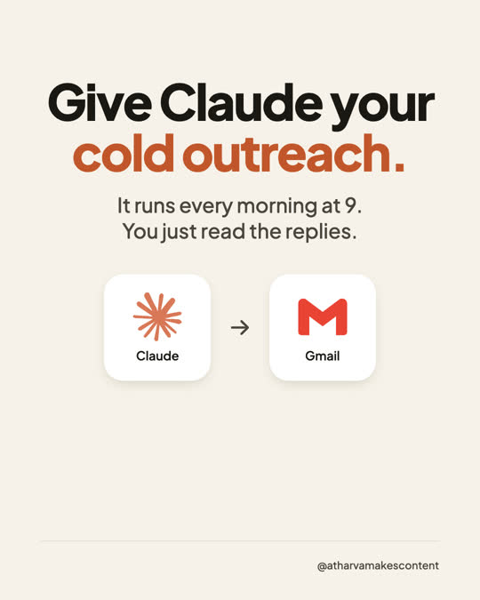
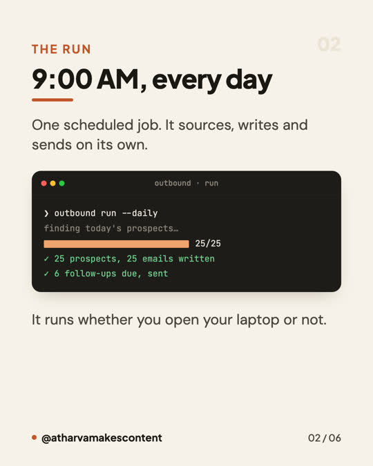
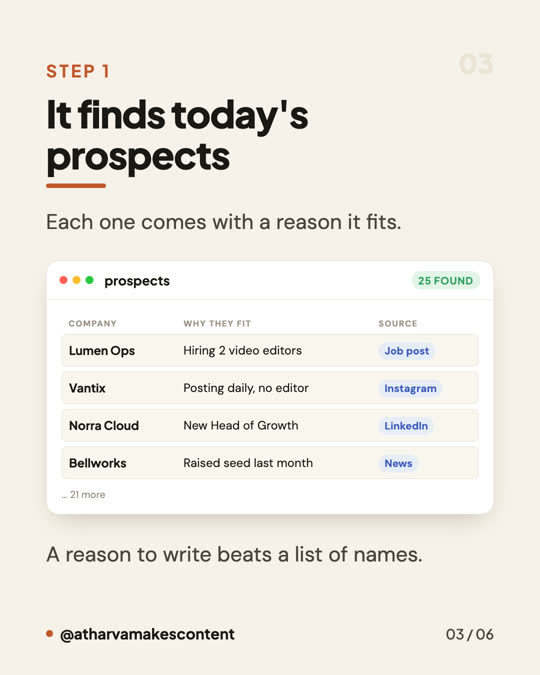
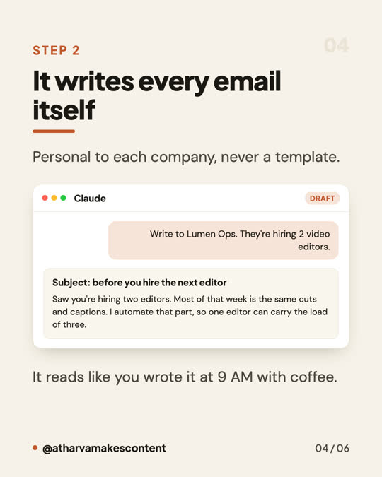

<meta charset="utf-8">
<meta name="viewport" content="width=device-width, initial-scale=1">
<meta name="description" content="Done-for-you AI agents and automations for companies: customer replies, lead follow-up, content, finance admin and operations, set up on the tools you already use and handed over.">
<meta property="og:title" content="amc.automations">
<meta property="og:description" content="AI agents and automations, built for your company.">
<title>amc.automations | AI agents and automations for companies</title>
<link rel="preconnect" href="https://fonts.googleapis.com">
<link rel="preconnect" href="https://fonts.gstatic.com" crossorigin>
<link rel="stylesheet" href="https://fonts.googleapis.com/css2?family=Bricolage+Grotesque:opsz,wght@12..96,400;12..96,600;12..96,800&family=IBM+Plex+Mono:wght@400;500;600&family=Source+Sans+3:ital,wght@0,400;0,500;0,600;1,400&display=swap">
<style>
:root{
  --ground:#FAF7F2;
  --surface:#FFFFFF;
  --surface-2:#F3EEE6;
  --line:#E4DCCF;
  --line-strong:#D3C7B4;
  --ink:#1E1C18;
  --ink-2:#4A453D;
  --muted:#7A7264;
  --clay:#C05F38;
  --clay-soft:#F2E2D9;
  --clay-ink:#8E4224;
  --good:#3F7A52;
  --radius:14px;
  --maxw:1120px;
  color-scheme:light;
  --f-display:"Bricolage Grotesque","Trebuchet MS",system-ui,sans-serif;
  --f-body:"Source Sans 3",system-ui,-apple-system,sans-serif;
  --f-data:"IBM Plex Mono",ui-monospace,Menlo,monospace;
}
*{box-sizing:border-box}
body{margin:0;background:var(--ground);color:var(--ink);font-family:var(--f-body);font-size:16px;line-height:1.55;-webkit-font-smoothing:antialiased}
img{max-width:100%}
a{color:inherit}
h1,h2,h3{font-family:var(--f-display);margin:0;text-wrap:balance;letter-spacing:-.02em;line-height:1.05}
.wrap{max-width:var(--maxw);margin:0 auto;padding-inline:28px}
.eyebrow{font-family:var(--f-data);font-size:12px;letter-spacing:.16em;text-transform:uppercase;color:var(--muted)}

/* nav */
header.nav{position:sticky;top:0;z-index:30;background:color-mix(in srgb,var(--ground) 88%,transparent);backdrop-filter:blur(10px);border-bottom:1px solid var(--line)}
.nav-in{max-width:var(--maxw);margin:0 auto;padding-block:14px;padding-inline:28px;display:flex;align-items:center;gap:16px;flex-wrap:wrap}
.brand{display:flex;align-items:center;gap:10px;font-family:var(--f-display);font-weight:800;font-size:18px;letter-spacing:-.03em}
.spark{width:20px;height:20px;color:var(--clay);flex:none}
.navlinks{margin-left:auto;display:flex;gap:6px;flex-wrap:wrap}
.navlinks button{font-family:var(--f-body);font-size:15px;font-weight:500;color:var(--ink-2);background:none;border:0;padding:8px 16px;border-radius:999px;cursor:pointer}
.navlinks button:hover{color:var(--ink);background:var(--surface-2)}
.navlinks button[aria-current="page"]{background:var(--surface);color:var(--ink);box-shadow:0 1px 2px rgba(0,0,0,.06);border:1px solid var(--line)}
button:focus-visible,input:focus-visible,select:focus-visible,a:focus-visible{outline:2px solid var(--clay);outline-offset:2px}

/* hero */
.hero{position:relative;overflow:hidden;border-bottom:1px solid var(--line)}
.hero-art{position:absolute;inset:0;pointer-events:none;
  background:
    radial-gradient(60% 55% at 78% 18%, color-mix(in srgb,var(--clay) 26%,transparent), transparent 70%),
    radial-gradient(45% 50% at 12% 78%, color-mix(in srgb,var(--clay) 14%,transparent), transparent 72%),
    radial-gradient(38% 40% at 46% 0%, color-mix(in srgb,var(--good) 10%,transparent), transparent 70%);
  filter:saturate(1.05)}
.hero-grain{position:absolute;inset:0;pointer-events:none;opacity:.35;mix-blend-mode:multiply;
  background-image:url("data:image/svg+xml,%3Csvg xmlns='http://www.w3.org/2000/svg' width='160' height='160'%3E%3Cfilter id='n'%3E%3CfeTurbulence type='fractalNoise' baseFrequency='.85' numOctaves='3'/%3E%3C/filter%3E%3Crect width='160' height='160' filter='url(%23n)' opacity='.5'/%3E%3C/svg%3E")}
.hero-in{position:relative;max-width:var(--maxw);margin:0 auto;padding-block:56px;padding-inline:28px;display:grid;grid-template-columns:1.15fr .85fr;gap:40px;align-items:center}
@media(max-width:900px){.hero-in{grid-template-columns:1fr;gap:28px}}
.hero h1{font-size:clamp(38px,6vw,66px);font-weight:800;max-width:20ch}
.hero h1 .clay{color:var(--clay)}
.lede{max-width:52ch;font-size:clamp(17px,1.6vw,19px);color:var(--ink-2);margin-top:20px}
.hero-cta{display:flex;gap:12px;flex-wrap:wrap;margin-top:34px}
.btn{font-family:var(--f-body);font-weight:600;font-size:15px;padding:12px 22px;border-radius:999px;border:1px solid var(--clay);background:var(--clay);color:#fff;cursor:pointer;text-decoration:none;display:inline-block}
.linkish{background:none;border:0;padding:0;font:inherit;color:var(--clay);cursor:pointer;text-decoration:underline}
.handover{margin:42px 0;padding:26px 28px;border-radius:var(--radius);background:var(--clay-soft);
  border:1px solid color-mix(in srgb,var(--clay) 28%,transparent);position:relative}
.handover .ho-mark{font-family:var(--f-data);font-size:11px;letter-spacing:.12em;text-transform:uppercase;
  color:var(--clay-ink);margin-bottom:8px}
.handover h3{font-family:var(--f-display);font-size:24px;font-weight:800;margin:0 0 10px;color:var(--ink)}
.handover p{margin:0 0 16px;color:var(--ink-2);font-size:16px;line-height:1.65}
.handover .ho-pts{list-style:none;padding:0;margin:0 0 20px;display:grid;gap:8px}
.handover .ho-pts li{padding-left:22px;position:relative;font-size:15px;color:var(--ink-2);line-height:1.5}
.handover .ho-pts li::before{content:'';position:absolute;left:0;top:8px;width:8px;height:8px;border-radius:50%;
  background:var(--clay);opacity:.75}
.handover .ho-pts b{color:var(--clay-ink);font-weight:700}
.handover .ho-alt{display:block;margin-top:12px;font-size:13px;color:var(--muted)}
.btn:hover{filter:brightness(1.06)}
.btn.ghost{background:transparent;color:var(--ink);border-color:var(--line-strong)}
.btn.ghost:hover{background:var(--surface)}

/* stat strip */
.stats{display:grid;grid-template-columns:repeat(4,1fr);gap:0;border-top:1px solid var(--line);background:var(--surface)}
.stats>.stat:first-child{padding-left:max(28px,calc((100vw - var(--maxw))/2 + 28px))}
.stat{padding:24px 28px;border-right:1px solid var(--line)}
.stat:last-child{border-right:0}
.stat b{display:block;font-family:var(--f-data);font-variant-numeric:tabular-nums;font-size:clamp(22px,3vw,30px);font-weight:600;letter-spacing:-.02em}
.stat span{font-size:13.5px;color:var(--muted)}
@media(max-width:760px){.stats{grid-template-columns:repeat(2,1fr)}.stat{border-bottom:1px solid var(--line)}.stat:nth-child(2n){border-right:0}}

section{padding-block:56px}
.sec-head{display:flex;align-items:end;justify-content:space-between;gap:20px;flex-wrap:wrap;margin-bottom:26px}
.sec-head h2{font-size:clamp(26px,3.6vw,38px);font-weight:800}
.sec-head p{margin:8px 0 0;color:var(--muted);max-width:52ch}

/* pillars */
.pillars{display:grid;grid-template-columns:repeat(auto-fit,minmax(240px,1fr));gap:18px}
.pillar{background:var(--surface);border:1px solid var(--line);border-radius:var(--radius);padding:22px}
.pillar .n{font-family:var(--f-data);font-size:12px;color:var(--clay);letter-spacing:.12em}
.pillar h3{font-size:19px;margin:10px 0 8px;font-weight:600}
.pillar p{margin:0;color:var(--ink-2);font-size:15px}

/* compare */
.compare{display:grid;grid-template-columns:1fr 1fr;gap:18px}
@media(max-width:640px){.wrap,.hero-in,.nav-in{padding-inline:20px}}
@media(max-width:700px){.compare{grid-template-columns:1fr}}
.col{border:1px solid var(--line);border-radius:var(--radius);padding:24px;background:var(--surface)}
.col.win{border-color:color-mix(in srgb,var(--clay) 45%,var(--line));background:linear-gradient(180deg,var(--clay-soft),var(--surface) 55%)}
.col h3{font-size:15px;text-transform:uppercase;letter-spacing:.1em;font-family:var(--f-data);font-weight:500;color:var(--muted)}
.col .big{font-family:var(--f-data);font-variant-numeric:tabular-nums;font-size:clamp(30px,5vw,44px);font-weight:600;letter-spacing:-.03em;margin:14px 0 4px}
.col ul{margin:14px 0 0;padding-left:18px;color:var(--ink-2);font-size:15px}
.col li{margin-bottom:6px}

/* guides */
.filterbar{background:var(--surface-2);border:1px solid var(--line);border-radius:18px;padding:20px;display:grid;grid-template-columns:1fr;gap:16px;align-items:end}
@media(max-width:700px){.filterbar{grid-template-columns:1fr}}
label.fl{display:block;font-size:13.5px;font-weight:600;color:var(--ink-2);margin-bottom:8px}
input[type=search],input[type=email],input[type=text],select{width:100%;font-family:var(--f-body);font-size:16px;padding:13px 16px;border-radius:12px;border:1px solid var(--line-strong);background:var(--surface);color:var(--ink)}
.chips{display:flex;gap:10px;flex-wrap:wrap;margin:22px 0 10px}
.chip{font-family:var(--f-body);font-size:14.5px;font-weight:600;padding:9px 18px;border-radius:999px;border:1px solid var(--line-strong);background:var(--surface);color:var(--ink-2);cursor:pointer;display:inline-flex;gap:8px;align-items:center}
.chip .c{font-family:var(--f-data);font-size:12.5px;color:var(--muted)}
.chip[aria-pressed="true"]{background:var(--ink);border-color:var(--ink);color:var(--ground)}
.chip[aria-pressed="true"] .c{color:color-mix(in srgb,var(--ground) 70%,transparent)}
.count{font-family:var(--f-data);font-size:13px;color:var(--muted);margin:18px 0 14px}

.grid{display:grid;grid-template-columns:repeat(auto-fill,minmax(278px,1fr));gap:14px}
.card{background:var(--surface);border:1px solid var(--line);border-radius:var(--radius);padding:18px;display:flex;flex-direction:column;gap:14px;text-align:left;font:inherit;color:inherit;cursor:pointer}
.card:hover{border-color:var(--line-strong);box-shadow:0 6px 20px rgba(60,40,20,.07)}
.card-top{display:flex;align-items:center;justify-content:space-between;gap:10px}
.cat{font-family:var(--f-data);font-size:11.5px;letter-spacing:.09em;text-transform:uppercase;color:var(--muted)}
.card h3{font-size:20px;font-weight:600;line-height:1.2}
.card p{margin:0;font-size:14.5px;color:var(--ink-2)}
.empty{padding:40px;text-align:center;color:var(--muted);border:1px dashed var(--line-strong);border-radius:var(--radius)}

/* detail panel */
dialog{border:0;padding:0;background:transparent;max-width:640px;width:calc(100% - 32px)}
dialog::backdrop{background:rgba(25,20,14,.45)}
.sheet{background:var(--surface);border:1px solid var(--line);border-radius:18px;padding:26px}
.sheet h3{font-family:var(--f-display);font-size:26px;font-weight:800;margin:10px 0 10px}
.sheet .steps{margin:18px 0 0;padding-left:20px;color:var(--ink-2)}
.sheet .steps li{margin-bottom:8px}
.close{float:right;background:var(--surface-2);border:1px solid var(--line);border-radius:999px;width:32px;height:32px;cursor:pointer;color:var(--ink)}

/* forms */
.panel{background:var(--surface);border:1px solid var(--line);border-radius:18px;padding:28px;max-width:560px}
.panel .row{display:flex;gap:10px;flex-wrap:wrap;margin-top:16px}
.panel .row input{flex:1 1 220px}
.note{font-size:13px;color:var(--muted);margin-top:12px}
footer{border-top:1px solid var(--line);padding-block:30px;color:var(--muted);font-size:14px}
.foot-in{display:flex;justify-content:space-between;gap:16px;flex-wrap:wrap}

/* home blocks */
.byline{display:flex;align-items:center;gap:12px;margin-bottom:22px}
.mark{width:46px;height:46px;border-radius:50%;background:var(--clay-soft);border:1px solid color-mix(in srgb,var(--clay) 35%,transparent);display:grid;place-items:center;color:var(--clay);flex:none}
.mark svg{width:22px;height:22px}
.byline .who{font-family:var(--f-display);font-weight:600;font-size:15px}
.covers{margin-top:26px;font-family:var(--f-data);font-size:12.5px;color:var(--muted);letter-spacing:.04em}
.results{display:grid;grid-template-columns:repeat(3,1fr);gap:18px}
@media(max-width:820px){.results{grid-template-columns:1fr}}
.result{background:var(--surface);border:1px solid var(--line);border-radius:var(--radius);padding:24px;text-align:left;font:inherit;color:inherit;cursor:pointer}
.result:hover{border-color:var(--line-strong);box-shadow:0 6px 20px rgba(60,40,20,.07)}
.result .ico{font-family:var(--f-data);font-size:22px;color:var(--clay);display:block;margin-bottom:14px}
.result h3{font-size:20px;font-weight:600;margin-bottom:6px}
.result p{margin:0;color:var(--ink-2);font-size:15px}
.feat{border-top:1px solid var(--line)}
.feat-row{display:grid;grid-template-columns:auto 1fr auto;gap:22px;align-items:start;padding:24px 0;border-bottom:1px solid var(--line);width:100%;text-align:left;background:none;border-left:0;border-right:0;border-top:0;font:inherit;color:inherit;cursor:pointer}
.feat-row:hover{background:var(--surface)}
.feat-row .idx{font-family:var(--f-data);font-size:13px;color:var(--muted);font-variant-numeric:tabular-nums;padding-top:4px}
.feat-row .kick{font-family:var(--f-data);font-size:11px;letter-spacing:.12em;color:var(--clay);text-transform:uppercase}
.feat-row h3{font-size:clamp(20px,2.4vw,26px);font-weight:600;margin:6px 0 8px}
.feat-row p{margin:0;color:var(--ink-2);font-size:15px;max-width:62ch}
.band{background:var(--surface);border:1px solid var(--line);border-radius:22px;padding:clamp(28px,5vw,52px);display:grid;grid-template-columns:1.1fr 1fr;gap:32px;align-items:center}
@media(max-width:820px){.band{grid-template-columns:1fr}}
.band h2{font-size:clamp(28px,4vw,42px);font-weight:800}
.band p{color:var(--ink-2);margin:14px 0 0;max-width:46ch}
.topics{border-top:1px solid var(--line)}
.topic{display:grid;grid-template-columns:1fr auto;gap:20px;align-items:center;padding:22px 0;border-bottom:1px solid var(--line);width:100%;text-align:left;background:none;border-left:0;border-right:0;border-top:0;font:inherit;color:inherit;cursor:pointer}
.topic:hover .tname{color:var(--clay)}
.tname{font-family:var(--f-display);font-size:clamp(20px,2.6vw,26px);font-weight:600}
.topic p{margin:6px 0 0;color:var(--muted);font-size:15px;max-width:60ch}
.topic .n{font-family:var(--f-data);font-size:13.5px;color:var(--muted);white-space:nowrap;font-variant-numeric:tabular-nums}
.card-foot{display:flex;justify-content:space-between;align-items:center;font-family:var(--f-data);font-size:12.5px;color:var(--muted);border-top:1px solid var(--line);padding-top:12px}
.card-foot .rg{color:var(--clay);font-weight:500}
/* guide page */
.guide{max-width:760px;margin:0 auto}
.back{font-family:var(--f-data);font-size:13px;color:var(--muted);background:none;border:0;cursor:pointer;padding:0;margin-bottom:26px}
.back:hover{color:var(--clay)}
.guide h1{font-size:clamp(30px,4.6vw,46px);font-weight:800;margin:12px 0 16px}
.guide .meta{display:flex;gap:14px;flex-wrap:wrap;font-family:var(--f-data);font-size:12.5px;color:var(--muted);align-items:center}
.guide .intro{font-size:19px;color:var(--ink-2);margin:20px 0 0}
.guide h2{scroll-margin-top:84px;font-size:22px;font-weight:600;margin:38px 0 14px}
.guide p,.guide li{color:var(--ink-2)}
.guide ul.need{margin:0;padding-left:20px}
.guide ul.need li{margin-bottom:6px}
/* hero panel */
.hero-panel{background:var(--surface);border:1px solid var(--line);border-radius:18px;padding:18px;box-shadow:0 18px 40px rgba(80,50,30,.08)}
.hp-head{display:flex;align-items:center;gap:8px;padding-bottom:12px;border-bottom:1px solid var(--line);font-family:var(--f-data);font-size:11.5px;color:var(--muted);letter-spacing:.08em}
.hp-dot{width:9px;height:9px;border-radius:50%;background:var(--clay);flex:none}
.hp-row{display:grid;grid-template-columns:auto 1fr auto;gap:12px;align-items:center;padding:11px 0;border-bottom:1px solid var(--line)}
.hp-row:last-child{border-bottom:0}
.hp-row .s{font-family:var(--f-data);font-size:11px;color:var(--muted);border:1px solid var(--line-strong);border-radius:50%;width:21px;height:21px;display:grid;place-items:center}
.hp-row .t{font-size:14.5px;font-weight:500}
.hp-row .t small{display:block;color:var(--muted);font-weight:400;font-size:12.5px}
.hp-row .v{font-family:var(--f-data);font-size:12px;color:var(--good);white-space:nowrap}
.hp-foot{margin-top:12px;padding-top:12px;border-top:1px solid var(--line);font-family:var(--f-data);font-size:12px;color:var(--muted);display:flex;justify-content:space-between}
/* alternating bands */
.band-bg{background:var(--surface-2);border-block:1px solid var(--line)}
/* anatomy strip */
.anat{display:grid;grid-template-columns:repeat(auto-fit,minmax(168px,1fr));gap:12px}
.anat div{background:var(--surface);border:1px solid var(--line);border-radius:12px;padding:14px 16px}
.anat b{display:block;font-family:var(--f-data);font-size:11px;letter-spacing:.09em;color:var(--clay);margin-bottom:6px}
.anat span{font-size:13.5px;color:var(--ink-2)}
/* footer */
.foot-grid{display:grid;grid-template-columns:1.4fr 1fr 1fr;gap:32px}
@media(max-width:760px){.foot-grid{grid-template-columns:1fr 1fr}}
.foot-grid h4{font-family:var(--f-data);font-size:11px;letter-spacing:.12em;color:var(--muted);text-transform:uppercase;margin:0 0 12px}
.foot-grid button{display:block;background:none;border:0;padding:3px 0;color:var(--ink-2);font:inherit;font-size:14px;cursor:pointer;text-align:left}
.foot-grid button:hover{color:var(--clay)}
.foot-brand{font-family:var(--f-display);font-size:17px;font-weight:800}
.guide-wrap>.guide{max-width:760px;min-width:0;width:100%;margin:0}

/* ===== v3: motion + depth (21st-style patterns, warm palette) ===== */
.hero-art{animation:aurora 18s ease-in-out infinite alternate;background-size:140% 140%}
@keyframes aurora{0%{transform:translate3d(0,0,0) scale(1)}50%{transform:translate3d(-3%,2%,0) scale(1.06)}100%{transform:translate3d(2%,-2%,0) scale(1.02)}}
.hero-dots{position:absolute;inset:0;pointer-events:none;opacity:.55;
  background-image:radial-gradient(color-mix(in srgb,var(--ink) 22%,transparent) 1px,transparent 1.2px);background-size:22px 22px;
  -webkit-mask-image:radial-gradient(70% 60% at 50% 30%,#000 20%,transparent 75%);mask-image:radial-gradient(70% 60% at 50% 30%,#000 20%,transparent 75%)}
.pill-new{display:inline-flex;align-items:center;gap:10px;font-family:var(--f-data);font-size:12.5px;color:var(--ink-2);
  background:color-mix(in srgb,var(--surface) 80%,transparent);border:1px solid var(--line-strong);border-radius:999px;padding:6px 14px 6px 8px;margin-bottom:22px;backdrop-filter:blur(6px)}
.pill-new b{white-space:nowrap;background:var(--ink);color:var(--ground);border-radius:999px;padding:2px 9px;font-weight:600;font-size:11px;letter-spacing:.06em}
.live-dot{width:8px;height:8px;border-radius:50%;background:var(--good);box-shadow:0 0 0 0 color-mix(in srgb,var(--good) 60%,transparent);animation:ping 2s infinite}
@keyframes ping{70%{box-shadow:0 0 0 8px transparent}100%{box-shadow:0 0 0 0 transparent}}
.shine{background:linear-gradient(100deg,var(--clay) 20%,#e59a6f 40%,var(--clay-ink) 55%,var(--clay) 80%);background-size:220% 100%;
  -webkit-background-clip:text;background-clip:text;color:transparent!important;animation:shine 6s linear infinite}
@keyframes shine{to{background-position:-220% 0}}
.btn{position:relative;overflow:hidden;transition:transform .15s ease,box-shadow .2s ease}
.btn:not(.ghost){box-shadow:0 1px 0 rgba(255,255,255,.25) inset,0 8px 20px -8px color-mix(in srgb,var(--clay) 70%,transparent)}
.btn:not(.ghost)::after{content:"";position:absolute;inset:0;background:linear-gradient(110deg,transparent 35%,rgba(255,255,255,.35) 50%,transparent 65%);transform:translateX(-120%);animation:sweep 3.6s ease-in-out infinite}
@keyframes sweep{60%,100%{transform:translateX(120%)}}
.btn:active{transform:scale(.97)}
.hero-panel{position:relative;animation:float 7s ease-in-out infinite}
@keyframes float{50%{transform:translateY(-6px)}}
.hero-panel::before{content:"";position:absolute;inset:-1px;border-radius:19px;padding:1px;pointer-events:none;
  background:conic-gradient(from var(--ang,0deg),transparent 0 70%,var(--clay) 85%,transparent 100%);
  -webkit-mask:linear-gradient(#000 0 0) content-box,linear-gradient(#000 0 0);-webkit-mask-composite:xor;mask-composite:exclude;animation:spin 6s linear infinite}
@property --ang{syntax:'<angle>';initial-value:0deg;inherits:false}
@keyframes spin{to{--ang:360deg}}
.hp-row{transition:background .3s}
.hp-row.on{background:linear-gradient(90deg,var(--clay-soft),transparent)}
.hp-row.on .v{color:var(--clay)}
/* spotlight cards */
.card,.result,.bento>div,.svc-step{position:relative;isolation:isolate;transition:transform .2s ease,border-color .2s,box-shadow .2s}
.card::before,.result::before,.bento>div::before{content:"";position:absolute;inset:0;border-radius:inherit;z-index:-1;opacity:0;transition:opacity .25s;
  background:radial-gradient(380px circle at var(--mx,50%) var(--my,50%),color-mix(in srgb,var(--clay) 13%,transparent),transparent 45%)}
.card:hover::before,.result:hover::before,.bento>div:hover::before{opacity:1}
.card:hover,.result:hover{transform:translateY(-3px)}
/* marquee */
.logos{border-bottom:1px solid var(--line);padding:22px 0;overflow:hidden;background:var(--ground)}
.logos p{text-align:center;margin:0 0 14px}
.mq{display:flex;width:max-content;animation:mq 38s linear infinite;-webkit-mask-image:linear-gradient(90deg,transparent,#000 12%,#000 88%,transparent)}
.logos:hover .mq{animation-play-state:paused}
.mq span{display:inline-flex;align-items:center;gap:9px;margin:0 30px;font-family:var(--f-display);font-weight:600;font-size:17px;color:var(--ink-2);white-space:nowrap}
.mq img{width:22px;height:22px;opacity:.75}
@keyframes mq{to{transform:translateX(-50%)}}
.logos-wrap{-webkit-mask-image:linear-gradient(90deg,transparent,#000 10%,#000 90%,transparent);mask-image:linear-gradient(90deg,transparent,#000 10%,#000 90%,transparent)}
/* reveal */
.rv{opacity:0;transform:translateY(18px);transition:opacity .7s ease,transform .7s cubic-bezier(.2,.7,.2,1)}
.rv.in{opacity:1;transform:none}
/* nav accent */
.navlinks button.hire{background:var(--ink);color:var(--ground)}
.navlinks button.hire:hover{background:var(--clay);color:#fff}
.navlinks button.hire[aria-current="page"]{background:var(--clay);color:#fff;border-color:var(--clay)}
/* services */
.svc-hero h1{font-size:clamp(36px,5.6vw,62px);font-weight:800;max-width:18ch}
.bento{display:grid;grid-template-columns:repeat(6,1fr);gap:14px}
.bento>div{background:var(--surface);border:1px solid var(--line);border-radius:18px;padding:24px;overflow:hidden}
.bento>div:hover{border-color:var(--line-strong);box-shadow:0 10px 30px -12px rgba(80,50,30,.18)}
.b-a{grid-column:span 4}.b-b{grid-column:span 2}.b-c{grid-column:span 2}.b-d{grid-column:span 2}.b-e{grid-column:span 2}
@media(max-width:900px){.bento{grid-template-columns:1fr}.bento>div{grid-column:auto!important}}
.bento .k{font-family:var(--f-data);font-size:11px;letter-spacing:.12em;text-transform:uppercase;color:var(--clay)}
.bento h3{font-size:22px;font-weight:700;margin:10px 0 8px}
.bento p{margin:0;color:var(--ink-2);font-size:15px}
.flowline{display:flex;flex-wrap:wrap;gap:8px;margin-top:18px}
.flowline span{font-family:var(--f-data);font-size:12px;background:var(--surface-2);border:1px solid var(--line);border-radius:999px;padding:5px 11px;color:var(--ink-2);opacity:0;transform:translateY(6px);transition:all .4s ease}
.in .flowline span{opacity:1;transform:none}
.flowline span.hot{background:var(--clay);border-color:var(--clay);color:#fff}
.svc-steps{display:grid;grid-template-columns:repeat(4,1fr);gap:14px;counter-reset:sv}
@media(max-width:820px){.svc-steps{grid-template-columns:1fr 1fr}}
.svc-step{counter-increment:sv;background:var(--surface);border:1px solid var(--line);border-radius:14px;padding:20px}
.svc-step::before{content:counter(sv,decimal-leading-zero);font-family:var(--f-data);font-size:12px;color:var(--clay)}
.svc-step h4{margin:8px 0 6px;font-family:var(--f-display);font-size:18px}
.svc-step p{margin:0;font-size:14px;color:var(--ink-2)}
.wa{display:inline-flex;align-items:center;justify-content:center;gap:10px;background:#1f8f4e!important;border-color:#1f8f4e!important}
.wa img{width:18px;height:18px;filter:invert(1)}
.faq details{border-bottom:1px solid var(--line);padding:16px 0}
.faq summary{cursor:pointer;font-family:var(--f-display);font-size:18px;font-weight:600;list-style:none;display:flex;justify-content:space-between}
.faq summary::after{content:"+";color:var(--clay);font-family:var(--f-data)}
.faq details[open] summary::after{content:"–"}
.faq p{color:var(--ink-2);margin:10px 0 0;max-width:70ch}
.ok{color:var(--good)!important}.err{color:#b3261e!important}

@media(max-width:700px){.nav-in{padding-block:10px}.brand{font-size:16px}.navlinks{margin-left:0;width:100%;flex-wrap:nowrap;overflow-x:auto;scrollbar-width:none;gap:4px;-webkit-mask-image:linear-gradient(90deg,#000 88%,transparent)}
.navlinks::-webkit-scrollbar{display:none}.navlinks button{padding:7px 12px;font-size:14px;white-space:nowrap}.navlinks .hire{order:-1}
.hero-in{padding-block:36px}.hero-panel{animation:none}.hero-cta .btn{flex:1 1 auto;text-align:center}}
/* flow diagram: boxes, flowing lines, glow in order */
.fx{display:flex;flex-direction:column;align-items:stretch;margin:26px 0 8px;--t:1.3s}
.fx .nd{position:relative;display:grid;grid-template-columns:auto 1fr;gap:12px;align-items:start;background:var(--surface);border:1px solid var(--line-strong);border-radius:12px;padding:13px 16px;font-size:14.5px;color:var(--ink-2);line-height:1.45;
  animation:ndglow calc(var(--t) * var(--n)) infinite;animation-delay:calc(var(--t) * var(--i))}
.fx .nd b{font-family:var(--f-data);font-size:11px;font-weight:600;color:var(--clay);border:1px solid color-mix(in srgb,var(--clay) 40%,transparent);border-radius:6px;padding:2px 6px;margin-top:1px}
.fx .ln{position:relative;align-self:flex-start;margin-left:30px;width:2px;height:26px;background:var(--line-strong);overflow:hidden}
.fx .ln::after{content:"";position:absolute;left:0;top:-100%;width:100%;height:100%;background:linear-gradient(transparent,var(--clay));
  animation:lnflow calc(var(--t) * var(--n)) infinite;animation-delay:calc(var(--t) * var(--i) + var(--t) * .55)}
.fx.h{flex-direction:row;flex-wrap:wrap;align-items:center;row-gap:10px;margin:18px 0 0}
.fx.h .nd{display:block;padding:7px 12px;font-family:var(--f-data);font-size:12px;border-radius:9px;white-space:nowrap}
.fx.h .ln{align-self:center;margin:0;width:22px;height:2px}
.fx.h .ln::after{top:0;left:-100%;background:linear-gradient(90deg,transparent,var(--clay));animation-name:lnflowh}
@keyframes ndglow{0%{border-color:var(--line-strong);box-shadow:none}
  6%,16%{border-color:var(--clay);box-shadow:0 0 0 3px color-mix(in srgb,var(--clay) 18%,transparent),0 0 26px -2px color-mix(in srgb,var(--clay) 55%,transparent);color:var(--ink)}
  26%,100%{border-color:var(--line-strong);box-shadow:none}}
@keyframes lnflow{0%{top:-100%}12%{top:100%}100%{top:100%}}
@keyframes lnflowh{0%{left:-100%}12%{left:100%}100%{left:100%}}
.fx.lg{flex-wrap:nowrap;margin-top:18px}
.fx.lg .nd{flex:1 1 0;white-space:normal;text-align:center;padding:18px 10px;font-family:var(--f-display);font-size:15px;font-weight:600;border-radius:14px;min-height:78px;display:flex;flex-direction:column;align-items:center;justify-content:center;gap:6px}
.fx.lg .nd::before{content:attr(data-k);font-family:var(--f-data);font-size:10.5px;font-weight:500;color:var(--clay);letter-spacing:.1em}
.fx.lg .ln{width:34px;flex:none}
@media(max-width:820px){.fx.lg{flex-direction:column;align-items:stretch}.fx.lg .ln{width:2px;height:22px;margin:0 auto}.fx.lg .ln::after{top:-100%;left:0;background:linear-gradient(transparent,var(--clay));animation-name:lnflow}.fx.lg .nd{min-height:0;padding:12px}}
.fx.sm{margin:16px 0 0}.fx.sm .nd{padding:7px 11px;font-size:13px;border-radius:9px;gap:9px}.fx.sm .nd b{font-size:10px;padding:1px 5px}.fx.sm .ln{height:12px;margin-left:24px}
.fx-card{background:linear-gradient(180deg,var(--surface-2),var(--surface));border:1px solid var(--line);border-radius:18px;padding:20px 22px 22px;margin-top:26px}
.fx-card .fx{margin:14px 0 0}
.fx-card .eyebrow{display:flex;align-items:center;gap:8px}
@media (prefers-reduced-motion:reduce){.fx .nd,.fx .ln::after{animation:none}}

[hidden]{display:none!important}
@media (prefers-reduced-motion:reduce){*{animation:none!important;transition:none!important}}

/* catalogue + agent page */
.guide-wrap{max-width:760px;margin:0 auto}
.feat-row{grid-template-columns:auto 1fr}
.feat-row .go{font-family:var(--f-data);font-size:13px;color:var(--clay);white-space:nowrap}
.guide ul.need{margin:0;padding-left:20px}
.guide ul.need li{margin-bottom:8px}
.guide .fx-card{margin-top:28px}
@media(max-width:700px){.feat-row{grid-template-columns:1fr}}
.card .cat{overflow-wrap:anywhere}
.guide h1,.guide .intro{overflow-wrap:anywhere}

.reels{display:grid;grid-template-columns:repeat(3,1fr);gap:18px}
.reel{background:var(--surface);border:1px solid var(--line);border-radius:18px;padding:12px;overflow:hidden}
.reel video{width:100%;aspect-ratio:9/16;object-fit:cover;border-radius:12px;background:#000;display:block}
.reel h3{font-size:17px;font-weight:700;margin:14px 6px 4px}
.reel p{margin:0 6px 8px;font-size:14px;color:var(--ink-2)}
.slides{display:grid;grid-template-columns:repeat(4,1fr);gap:14px}
.slides img{width:100%;border-radius:12px;border:1px solid var(--line);display:block}
.sys{background:var(--surface);border:1px solid var(--line);border-radius:20px;padding:clamp(22px,4vw,38px);margin-bottom:18px}
.sys h3{font-size:clamp(22px,2.8vw,30px);font-weight:800;margin:8px 0 8px}
.sys>p{color:var(--ink-2);max-width:68ch;margin:0 0 4px}
.io{display:grid;grid-template-columns:repeat(3,1fr);gap:14px;margin-top:22px}
.io div{background:var(--surface-2);border-radius:12px;padding:14px 16px;font-size:14.5px;color:var(--ink-2)}
.io b{display:block;font-family:var(--f-data);font-size:11px;letter-spacing:.12em;text-transform:uppercase;color:var(--clay);margin-bottom:6px}
.sysgo{display:grid;grid-template-columns:repeat(4,1fr);gap:14px}
.sysgo button{background:var(--surface);border:1px solid var(--line);border-radius:16px;padding:20px;text-align:left;font:inherit;color:inherit;cursor:pointer}
.sysgo button:hover{border-color:var(--line-strong);box-shadow:0 6px 20px rgba(60,40,20,.07)}
.sysgo h3{font-size:18px;font-weight:700;margin:8px 0 6px}
.sysgo p{margin:0;font-size:14px;color:var(--ink-2)}
.sysgo .k{font-family:var(--f-data);font-size:11px;letter-spacing:.12em;color:var(--clay)}
@media(max-width:900px){.reels,.io{grid-template-columns:1fr}.slides,.sysgo{grid-template-columns:1fr 1fr}}

.navlinks a.hire{font-size:15px;font-weight:500;background:var(--ink);color:var(--ground);padding:8px 16px;border-radius:999px}

/* demo */
.demo{background:var(--cb);color:var(--ct);border-radius:24px;padding:clamp(20px,4vw,40px);border:1px solid var(--cl)}
.demo .row{display:flex;gap:10px;flex-wrap:wrap}
.demo input{flex:1;min-width:220px;background:var(--cb2);border:1px solid var(--cl);color:var(--ct);border-radius:12px;padding:14px 16px;font:inherit;font-family:var(--f-data);font-size:14px}
.demo input::placeholder{color:var(--cm)}
.demo input:focus{outline:2px solid var(--cg);outline-offset:1px}
.demo .go{background:var(--cg);color:#08140d;border:0;border-radius:12px;padding:14px 22px;font:inherit;font-weight:700;cursor:pointer}
.demo .go:disabled{opacity:.5;cursor:wait}
.dstage{height:150px;margin:22px 0 8px;position:relative;border:1px dashed var(--cl);border-radius:14px;overflow:hidden;background:var(--cb2)}
.dstage .hint{position:absolute;inset:0;display:flex;align-items:center;justify-content:center;color:var(--cm);font-family:var(--f-data);font-size:13px;transition:opacity .3s}
.dstage.run .hint,.dstage.done .hint{opacity:0}
.strip{position:absolute;left:4%;right:4%;top:50%;height:46px;transform:translateY(-50%) scaleX(.2);opacity:0;border-radius:8px;background:repeating-linear-gradient(90deg,#26302b 0 6px,#1d2622 6px 12px);transition:transform .6s cubic-bezier(.2,.7,.2,1),opacity .4s}
.dstage.run .strip{transform:translateY(-50%) scaleX(1);opacity:1}
.dstage.done .strip{opacity:.25;transform:translateY(-50%) scaleX(1)}
.scan{position:absolute;top:0;bottom:0;width:3px;background:var(--cg);box-shadow:0 0 14px var(--cg);left:0}
.dstage.run .scan{animation:sweep 1.5s ease-in-out infinite alternate}
@keyframes sweep{to{left:calc(100% - 3px)}}
.seg{position:absolute;top:-6px;bottom:-6px;border:2px solid var(--cg);border-radius:6px;background:rgba(111,227,160,.18);opacity:0;transform:scaleY(.4)}
.seg.on{opacity:1;transform:none;transition:all .35s cubic-bezier(.2,.7,.2,1)}
.dstage.done .seg{opacity:0}
.stat2{font-family:var(--f-data);font-size:12.5px;color:var(--cm);min-height:20px;display:flex;justify-content:space-between;gap:12px}
.stat2 b{color:var(--cg);font-weight:500}
.pbar{height:3px;background:var(--cl);border-radius:3px;overflow:hidden;margin:8px 0 22px}
.pbar i{display:block;height:100%;width:0;background:var(--cg)}
.dout{display:grid;grid-template-columns:repeat(5,1fr);gap:12px}
.dslot{aspect-ratio:9/16;border:1px dashed var(--cl);border-radius:14px;position:relative;overflow:hidden;background:var(--cb2)}
.dslot video{position:absolute;inset:0;width:100%;height:100%;object-fit:cover;opacity:0;transform:translateY(-70px) scale(.5);transition:opacity .5s ease,transform .7s cubic-bezier(.2,.9,.3,1.2)}
.dslot.in{border-style:solid;border-color:var(--cg)}
.dslot.in video{opacity:1;transform:none}
.dslot span{position:absolute;left:10px;top:10px;z-index:2;font-family:var(--f-data);font-size:11px;background:rgba(0,0,0,.6);color:var(--cg);padding:3px 8px;border-radius:99px;opacity:0;transition:opacity .4s .5s}
.dslot.in span{opacity:1}
.dnote{margin:16px 0 0;font-size:12.5px;color:var(--cm);font-family:var(--f-data)}
.dcta{margin-top:16px;display:none}
.dcta.show{display:block}
@media(max-width:700px){.dout{gap:8px}}

.dcard{aspect-ratio:9/14;border-radius:14px;padding:14px;display:flex;flex-direction:column;justify-content:space-between;position:relative;overflow:hidden;border:1px solid var(--cl);background:var(--cb2);opacity:0;transform:translateY(-50px) scale(.6);transition:opacity .5s ease,transform .7s cubic-bezier(.2,.9,.3,1.2)}
.dcard.in{opacity:1;transform:none;border-color:var(--cg)}
.dcard::before{content:"";position:absolute;inset:0;background:var(--g,linear-gradient(160deg,#1f3a2c,#0e1311));opacity:.9}
.dcard>*{position:relative}
.dcard .tag{font-family:var(--f-data);font-size:10.5px;letter-spacing:.1em;color:var(--cg)}
.dcard h4{margin:0;font-family:var(--f-display);font-size:clamp(15px,1.5vw,18px);line-height:1.2;color:#fff}
.dcard .meta{font-family:var(--f-data);font-size:10.5px;color:#cfe0d4;display:flex;flex-direction:column;gap:3px}
.dcard .play{width:34px;height:34px;border-radius:50%;background:rgba(255,255,255,.14);display:grid;place-items:center;margin:auto;font-size:13px;color:#fff}
.dcard .cap{font-family:var(--f-data);font-size:10px;color:#fff;background:rgba(0,0,0,.45);padding:3px 6px;border-radius:4px;align-self:flex-start}
@media(max-width:800px){.dout{grid-template-columns:repeat(2,1fr)}}

.dcard.mailc{aspect-ratio:auto;min-height:190px;justify-content:flex-start;gap:8px}
.dcard.mailc h4{font-size:14.5px}
.dcard.mailc p{margin:0;font-size:12.5px;line-height:1.45;color:#d8e6dc}
.dout.m4{grid-template-columns:repeat(4,1fr)}
.dcard.slide{aspect-ratio:4/5}
.dcard.slide.cover h4{font-size:clamp(17px,1.9vw,22px)}
.dcard.slide p{margin:0;font-size:12px;color:#d8e6dc}
@media(max-width:800px){.dout.m4{grid-template-columns:repeat(2,1fr)}}
/* v4 console */
.cz{--cb:#0e1311;--cb2:#151c19;--cl:#26302b;--ct:#e9efe9;--cm:#8b9a90;--cg:#6fe3a0}
.console{background:var(--cb);color:var(--ct);border-radius:20px;padding:22px;border:1px solid var(--cl);box-shadow:0 30px 60px -30px rgba(0,0,0,.45);font-family:var(--f-data)}
.console .ch{display:flex;justify-content:space-between;align-items:center;font-size:11px;letter-spacing:.12em;color:var(--cm);text-transform:uppercase;margin-bottom:16px}
.console .ch i{display:inline-block;width:8px;height:8px;border-radius:50%;background:var(--cg);margin-right:8px;box-shadow:0 0 10px var(--cg)}
.kpis{display:grid;grid-template-columns:repeat(4,1fr);gap:10px;margin-bottom:18px}
.kpi{background:var(--cb2);border:1px solid var(--cl);border-radius:12px;padding:12px}
.kpi b{display:block;font-size:clamp(22px,3vw,32px);font-weight:600;letter-spacing:-.02em;color:var(--ct)}
.kpi span{font-size:11px;color:var(--cm)}
.bars{display:flex;align-items:flex-end;gap:6px;height:90px;padding:0 2px;border-bottom:1px solid var(--cl)}
.bars div{flex:1;background:linear-gradient(var(--cg),#2f8a5a);border-radius:3px 3px 0 0;min-height:2px;opacity:.9}
.bars div.z{background:var(--cl)}
.bl{display:flex;justify-content:space-between;font-size:10.5px;color:var(--cm);margin:6px 2px 14px}
.feed{list-style:none;margin:0;padding:0;font-size:12.5px}
.feed li{display:flex;justify-content:space-between;gap:12px;padding:8px 0;border-top:1px solid var(--cl);color:var(--ct)}
.feed li span{color:var(--cm)}
.feed li b{color:var(--cg);font-weight:500}
.proof{display:grid;grid-template-columns:1fr 1fr;gap:28px;align-items:start}
.proof h3{font-size:clamp(24px,3vw,34px);font-weight:800;margin:8px 0 12px}
.proof p{color:var(--ink-2);max-width:56ch}
.proof ul{padding-left:18px;color:var(--ink-2)}
.proof li{margin-bottom:6px}
.mail{background:#fff;border:1px solid var(--line);border-radius:14px;padding:20px;font-size:14.5px;line-height:1.55;box-shadow:0 20px 40px -24px rgba(60,40,20,.25)}
.mail .mh{font-family:var(--f-data);font-size:12px;color:var(--muted);border-bottom:1px solid var(--line);padding-bottom:10px;margin-bottom:12px}
.mail .mh b{color:var(--ink);font-weight:600}
.blur{filter:blur(5px);user-select:none}
.mail p{margin:0 0 10px}
.mini{display:flex;gap:14px;flex-wrap:wrap}
.mini .reel{width:calc(33.3% - 10px);min-width:150px}
.also{display:grid;grid-template-columns:1fr 1fr;gap:14px}
.also div{background:var(--surface);border:1px solid var(--line);border-radius:14px;padding:18px}
.also h4{margin:0 0 4px;font-family:var(--f-display);font-size:18px}
.also p{margin:0;font-size:14.5px;color:var(--ink-2)}
.srows{border-top:1px solid var(--line)}
.srow{display:grid;grid-template-columns:auto 1fr auto;gap:20px;padding:20px 0;border-bottom:1px solid var(--line);align-items:start;width:100%;text-align:left;background:none;border-left:0;border-right:0;border-top:0;font:inherit;color:inherit;cursor:pointer}
.srow:hover{background:var(--surface)}
.srow .n{font-family:var(--f-data);font-size:13px;color:var(--muted);padding-top:4px}
.srow h3{margin:0 0 4px;font-size:22px;font-weight:700}
.srow p{margin:0;color:var(--ink-2);font-size:15px;max-width:60ch}
.srow .pr{font-family:var(--f-data);font-size:12.5px;color:var(--clay);white-space:nowrap;padding-top:6px}
@media(max-width:900px){.proof,.also{grid-template-columns:1fr}.kpis{grid-template-columns:1fr 1fr}.srow{grid-template-columns:auto 1fr}.srow .pr{display:none}.mini .reel{width:100%}}
</style>

<header class="nav">
  <div class="nav-in">
    <div class="brand"><svg class="spark" viewBox="0 0 24 24" fill="currentColor" aria-hidden="true"><path d="M12 1.5l1.9 6.3 6.3 1.9-6.3 1.9L12 22.5l-1.9-10.9L3.8 9.7l6.3-1.9z"/></svg> amc.automations</div>
    <nav class="navlinks">
      <button data-route="home">Home</button>
      <button data-route="systems">Systems</button>
      <button data-route="templates">Agents</button>
      <a class="hire" href="https://wa.me/917075969025?text=Hi%20Atharva%2C%20I%20saw%20amc.automations%20and%20want%20to%20book%20a%20call" target="_blank" rel="noopener" style="text-decoration:none">Book a call</a>
    </nav>
  </div>
</header>

<main>

<!-- SERVICES -->
<div id="view-services" hidden>
  <div class="hero">
    <div class="hero-art"></div><div class="hero-dots"></div><div class="hero-grain"></div>
    <div class="hero-in svc-hero" style="grid-template-columns:1fr">
      <div>
      <span class="pill-new"><b>DONE FOR YOU</b><span class="live-dot"></span> Taking new builds this month</span>
      <h1>Your busywork, <span class="clay shine">running on its own.</span></h1>
      <p class="lede">We build AI agents and automations for your business: designed around your tools, tested on your real data, and handed over working.</p>
      <div class="hero-cta">
        <a class="btn wa" href="https://wa.me/917075969025?text=Hi%20Atharva%2C%20I%20saw%20amc.automations%20and%20want%20to%20automate%20" target="_blank" rel="noopener">Talk on WhatsApp</a>
        <a class="btn ghost" href="#services" data-jump="svc-form">Send the brief instead</a>
      </div>
      <p class="covers">n8n for the plumbing · Claude for the thinking · your tools stay yours</p>
      </div>
    </div>
  </div>

  <section class="wrap rv" style="padding-bottom:0">
    <div class="fx-card" style="margin-top:0"><p class="eyebrow"><span class="hp-dot"></span> How every build works</p><div data-lg data-flow="Your tools|Trigger fires|n8n moves the data|Claude does the thinking|Action taken|Your team notified"></div></div>
  </section>
  <section class="wrap rv">
    <p class="eyebrow">What we build</p>
    <h2 style="font-size:clamp(26px,3.6vw,38px);font-weight:800;margin:10px 0 26px">Four engines. Pick the one that hurts most.</h2>
    <div class="bento">
      <div class="b-a"><span class="k">01 · Flagship</span><h3>Outbound that runs itself</h3><p>Every morning it finds prospects that fit, writes each one a personal email, follows up on day 3, 7 and 15, and tells you who replied. Nobody tracks follow-ups by hand.</p>
        <div data-flow="Runs at 9 AM|Finds prospects|Finds decision-maker|Writes personal email|Sends|Follows up day 3, 7, 15|Hot lead to your team"></div></div>
      <div class="b-b"><span class="k">02 · WhatsApp</span><h3>Agents that answer at 2 AM</h3><p>Support, bookings, COD confirmation, lead qualifying, fee reminders. On Meta's official API, so your number stays safe.</p><div data-flow="Customer messages|Agent checks your info|Replies in seconds|Hands edge cases to staff"></div></div>
      <div class="b-c"><span class="k">03 · Voice</span><h3>AI sales caller</h3><p>Calls every new lead within minutes, qualifies, handles common objections, books the meeting and updates your CRM.</p><div data-flow="New lead|AI calls|Qualifies|Books meeting|CRM updated"></div></div>
      <div class="b-d"><span class="k">04 · Content</span><h3>A week of content from one prompt</h3><p>Scripts, edits, captions and a scheduled week, for brands and creators who post daily.</p><div data-flow="One brief|Scripts|Edits|Captions|Week scheduled"></div></div>
      <div class="b-e"><span class="k">+ Anything else</span><h3>Your weird workflow</h3><p>Invoices, reports, CRM hygiene, handoffs between tools. If a person does it the same way every time, it can run on its own.</p><div data-flow="Trigger|Your tools|AI step|Done, logged"></div></div>
    </div>
    <p style="margin:22px 0 0"><button class="btn ghost" data-route="templates">See the agents we can build</button></p>
  </section>

  <div class="band-bg"><section class="wrap rv">
    <p class="eyebrow">How it goes</p>
    <h2 style="font-size:clamp(26px,3.6vw,38px);font-weight:800;margin:10px 0 26px">From first call to running on its own.</h2>
    <div class="svc-steps">
      <div class="svc-step"><h4>Discovery call</h4><p>You show us the work that eats your team's week.</p></div>
      <div class="svc-step"><h4>Design the flow</h4><p>You get the exact steps in writing before anything is built.</p></div>
      <div class="svc-step"><h4>Build and test</h4><p>Built in n8n or Claude Code, then run on your real data.</p></div>
      <div class="svc-step"><h4>Handover</h4><p>You approve it, it goes live, and support stays open after.</p></div>
    </div>
  </section></div>

  <section class="wrap rv" id="svc-form">
    <div class="band">
      <div>
        <p class="eyebrow">Send the brief</p>
        <h2>Tell me what eats your week.</h2>
        <p>One line is enough. You get a reply within a day on whether it can be automated and how.</p>
      </div>
      <form id="sv">
        <label class="fl" for="sv-name">Business</label>
        <input id="sv-name" name="business" type="text" placeholder="e.g. Lemon Media, Mumbai" required>
        <div style="height:12px"></div>
        <label class="fl" for="sv-job">What should run on its own?</label>
        <input id="sv-job" name="job" type="text" placeholder="e.g. follow-ups on every lead from our ads" required>
        <div style="height:12px"></div>
        <label class="fl" for="sv-email">Email or WhatsApp</label>
        <input id="sv-email" name="contact" type="text" placeholder="you@business.com or +91..." required>
        <div style="height:12px"></div>
        <button class="btn" type="submit" style="width:100%">Send the brief</button>
        <p id="sv-done" class="note" hidden></p>
      </form>
    </div>
  </section>

  <section class="wrap rv faq" style="padding-top:0">
    <p class="eyebrow">Straight answers</p>
    <h2 style="font-size:clamp(26px,3.6vw,38px);font-weight:800;margin:10px 0 14px">Before you ask.</h2>
    <details><summary>Do I need to change my tools?</summary><p>No. The build connects the tools you already use: WhatsApp, Gmail, Sheets, your CRM, your calendar.</p></details>
    <details><summary>Who owns it once it's built?</summary><p>You do. It runs on your accounts and your keys. Nothing is locked to us.</p></details>
    <details><summary>What if it breaks?</summary><p>Every build ships with the checks that catch problems early, and support stays open after handover.</p></details>
    <details><summary>How is it priced?</summary><p>By scope, after the call, in writing. You know the full number before anything starts.</p></details>
  </section>
</div>

<!-- HOME -->
<div id="view-home" hidden>
  <div class="hero">
    <div class="hero-art"></div><div class="hero-dots"></div><div class="hero-grain"></div>
    <div class="hero-in">
      <div>
      <span class="pill-new"><b>FOR D2C BRANDS AND AGENCIES</b><span class="live-dot"></span> Taking new builds</span>
      <h1>Your repeat work,<br><span class="clay shine">running on its own.</span></h1>
      <p class="lede">We build the automations your team does by hand: follow-ups, WhatsApp updates, content and outbound. On the right is our own outbound engine since 26 September, running with no one at the keyboard.</p>
      <div class="hero-cta">
        <a class="btn wa" href="https://wa.me/917075969025?text=Hi%20Atharva%2C%20I%20saw%20amc.automations%20and%20want%20to%20book%20a%20call" target="_blank" rel="noopener">Book a call on WhatsApp</a>
        <button class="btn ghost" data-route="systems">See what each system made</button>
      </div>
      <p class="covers">Real numbers, 8 Oct 2026. A person approves every email before it goes out.</p>
      </div>
      <div class="console cz" role="img" aria-label="Outbound engine log">
  <div class="ch"><span><i></i>Outbound engine · live log</span><span>26 Sep to 8 Oct</span></div>
  <div class="kpis">
    <div class="kpi"><b>304</b><span>prospects found</span></div>
    <div class="kpi"><b>317</b><span>emails sent</span></div>
    <div class="kpi"><b>4</b><span>replies</span></div>
    <div class="kpi"><b>7</b><span>bounces caught</span></div>
  </div>
  <div class="bars"><div class="" style="height:20%" title="8"></div><div class="" style="height:62%" title="25"></div><div class="" style="height:62%" title="25"></div><div class="" style="height:82%" title="33"></div><div class="" style="height:100%" title="40"></div><div class="" style="height:100%" title="40"></div><div class="z" style="height:2%" title="0"></div><div class="z" style="height:2%" title="0"></div><div class="" style="height:100%" title="40"></div><div class="" style="height:100%" title="40"></div><div class="" style="height:100%" title="40"></div><div class="" style="height:65%" title="26"></div></div>
  <div class="bl"><span>27 Sep</span><span>emails sent per day, capped at 40</span><span>8 Oct</span></div>
  <ul class="feed">
    <li>approved by a person before sending<b>323</b></li>
    <li>prospects with a personal opening line<b>286</b></li>
    <li>low-lead warnings raised by the engine<b>28</b></li>
  </ul>
</div>
    </div>
  </div>

  <section class="wrap cz">
    <p class="eyebrow">Output 1 · Outbound</p>
    <div class="sec-head" style="margin-bottom:22px"><h2 style="font-size:clamp(26px,3.6vw,38px);font-weight:800">Drop in a company. Get the email sequence.</h2><button class="btn ghost" data-route="systems" data-jump-sys="outbound">How it works</button></div>
    <div class="demo cz" data-demo="mail">
      <div class="row"><input class="d-link" type="text" placeholder="Put a company website here" autocomplete="off" aria-label="Put a company website here"><button class="go d-go" type="button">Write the emails</button></div>
      <div class="dstage d-stage"><div class="hint">Paste any website, or just press the button</div><div class="strip"><div class="scan"></div><div class="seg" style="left:8%;width:7%"></div><div class="seg" style="left:27%;width:7%"></div><div class="seg" style="left:47%;width:7%"></div><div class="seg" style="left:66%;width:7%"></div><div class="seg" style="left:85%;width:7%"></div></div></div>
      <div class="stat2"><span class="d-msg">Waiting</span><span class="d-pct"></span></div>
      <div class="pbar"><i class="d-bar"></i></div>
      <div class="dout d-out"></div>
      <p class="dnote">Demo: the website is not read here. The company name comes from your link and the rest is sample text, so you can see the format: one outcome, one question, and follow-ups on day 3, 7 and 15.</p>
      <div class="dcta d-cta"><a class="btn wa" href="https://wa.me/917075969025?text=Hi%20Atharva%2C%20I%20tried%20the%20outbound%20demo.%20Can%20you%20run%20this%20for%20my%20business%3F" target="_blank" rel="noopener">Get a real one on WhatsApp</a></div>
    </div>
    <div style="margin-top:44px"><div class="proof">
      <div>
        <p class="eyebrow">A real one it sent</p>
        <h3>A real email the engine wrote.</h3>
        <p>It read about the brand, found one real thing to mention, and tied it to one outcome. Names are blurred here.</p>
        <ul><li>Each email names one thing about the company</li><li>One outcome, one question, no attachments</li><li>Follow-ups go out on day 3, 7 and 15</li></ul>
        <p><button class="btn ghost" data-route="systems" data-jump-sys="outbound">How the engine works</button></p>
      </div>
      <div class="mail">
  <div class="mh">To: <b class="blur">Founder Name</b> · Subject: <b>fewer "where is my order" messages for <span class="blur">Brand</span></b></div>
  <p>Hi <span class="blur">Name</span>,</p>
  <p>Since Shark Tank, you've probably seen how order spikes also bring spikes in "where is my order" messages.</p>
  <p>The outcome I'd aim for at <span class="blur">Brand</span>: your team stops answering delivery questions by hand. Customers get tracking updates on WhatsApp before they think to ask.</p>
  <p>You approve every message before it goes live, and you can switch it off at any point.</p>
  <p>Would a 15-minute call be worth it?</p>
</div>
    </div></div>
  </section>

  <div class="band-bg"><section class="wrap cz">
    <p class="eyebrow">Output 2 · Video</p>
    <div class="sec-head" style="margin-bottom:22px"><h2 style="font-size:clamp(26px,3.6vw,38px);font-weight:800">Drop in one long video. Get shorts out.</h2><button class="btn ghost" data-route="systems" data-jump-sys="video">How it works</button></div>
    <div class="demo cz" data-demo="shorts">
      <div class="row"><input class="d-link" type="text" placeholder="Put your link here" autocomplete="off" aria-label="Put your link here"><button class="go d-go" type="button">Make shorts</button></div>
      <div class="dstage d-stage"><div class="hint">Paste any link, or just press the button</div><div class="strip"><div class="scan"></div><div class="seg" style="left:8%;width:7%"></div><div class="seg" style="left:27%;width:7%"></div><div class="seg" style="left:47%;width:7%"></div><div class="seg" style="left:66%;width:7%"></div><div class="seg" style="left:85%;width:7%"></div></div></div>
      <div class="stat2"><span class="d-msg">Waiting</span><span class="d-pct"></span></div>
      <div class="pbar"><i class="d-bar"></i></div>
      <div class="dout d-out"></div>
      <p class="dnote">Demo: your link is not processed here. These cards show what each short comes with: a hook, a cut range, captions, speaker tracking and an end card. The topics change with every run.</p>
      <div class="dcta d-cta"><a class="btn wa" href="https://wa.me/917075969025?text=Hi%20Atharva%2C%20I%20tried%20the%20shorts%20demo.%20Can%20you%20make%20shorts%20from%20my%20video%3F" target="_blank" rel="noopener">Get a real one on WhatsApp</a></div>
    </div>
  </section></div>

  <section class="wrap cz">
    <p class="eyebrow">Output 3 · Posts</p>
    <div class="sec-head" style="margin-bottom:22px"><h2 style="font-size:clamp(26px,3.6vw,38px);font-weight:800">Drop in one idea. Get a carousel out.</h2><button class="btn ghost" data-route="systems" data-jump-sys="posts">How it works</button></div>
    <div class="demo cz" data-demo="slides">
      <div class="row"><input class="d-link" type="text" placeholder="Type your idea here" autocomplete="off" aria-label="Type your idea here"><button class="go d-go" type="button">Make the carousel</button></div>
      <div class="dstage d-stage"><div class="hint">Type any idea, or just press the button</div><div class="strip"><div class="scan"></div><div class="seg" style="left:8%;width:7%"></div><div class="seg" style="left:27%;width:7%"></div><div class="seg" style="left:47%;width:7%"></div><div class="seg" style="left:66%;width:7%"></div><div class="seg" style="left:85%;width:7%"></div></div></div>
      <div class="stat2"><span class="d-msg">Waiting</span><span class="d-pct"></span></div>
      <div class="pbar"><i class="d-bar"></i></div>
      <div class="dout d-out"></div>
      <p class="dnote">Demo: your idea becomes the cover. The other slides are sample text that show the layout: one point per slide, the same every time.</p>
      <div class="dcta d-cta"><a class="btn wa" href="https://wa.me/917075969025?text=Hi%20Atharva%2C%20I%20tried%20the%20carousel%20demo.%20Can%20you%20make%20posts%20for%20my%20brand%3F" target="_blank" rel="noopener">Get a real one on WhatsApp</a></div>
    </div>
    <p class="eyebrow" style="margin:44px 0 14px">Real carousel it made</p>
    <div class="slides"></div>
  </section>

  <section class="wrap" style="padding-top:0">
    <p class="eyebrow">Something else?</p>
    <div class="sec-head" style="margin-bottom:10px">
      <h2 style="font-size:clamp(26px,3.6vw,38px);font-weight:800">Or pick from the agent catalogue.</h2>
      <button class="btn ghost" data-route="templates" id="all-btn">All agents</button>
    </div>
    <div class="topics" id="topics"></div>
  </section>
  <section class="wrap">
    <div class="band">
      <div>
        <p class="eyebrow">Done for you</p>
        <h2>Tell us what should run on its own.</h2>
        <p>We build it around your tools, test it on your data and hand it over. You get a reply within a day on whether it can be automated and how.</p>
      </div>
      <div><button class="btn" data-brief style="width:100%">Send the brief</button><p class="note">Free call. No deck, no pressure.</p></div>
    </div>
  </section>
</div>

<!-- SYSTEMS -->
<div id="view-systems" hidden>
  <div class="hero">
    <div class="hero-art"></div><div class="hero-grain"></div>
    <div class="hero-in" style="grid-template-columns:1fr">
      <div>
      <p class="eyebrow">The systems</p>
      <h1>What we run,<br><span class="clay">and what it made.</span></h1>
      <p class="lede">Each system shows how it works, what goes in, and a real thing it produced. A person approves what matters.</p>
      </div>
    </div>
  </div>
  <section class="wrap" style="padding-top:36px">

    <div class="sys" id="sys-outbound"><span class="eyebrow">01 · Outbound</span><h3>Outbound engine</h3>
      <p>Runs every night. Finds businesses that fit, checks each is real, writes each a personal email, sends within a daily cap and follows up. Replies come back to one place.</p>
      <div data-lg data-flow="Nightly run|Finds businesses|Checks site and email|Writes the email|You approve|Sends within cap|Follows up day 3, 7, 15"></div>
      <div class="io"><div><b>In</b>A short description of who you sell to.</div><div><b>Out</b>Checked prospects, sent emails, follow-ups, a reply log.</div><div><b>Limits</b>40 sends a day. A person approves each message.</div></div>
      <div class="proof" style="margin-top:26px"><div class="console cz" role="img" aria-label="Outbound engine log">
  <div class="ch"><span><i></i>Outbound engine · live log</span><span>26 Sep to 8 Oct</span></div>
  <div class="kpis">
    <div class="kpi"><b>304</b><span>prospects found</span></div>
    <div class="kpi"><b>317</b><span>emails sent</span></div>
    <div class="kpi"><b>4</b><span>replies</span></div>
    <div class="kpi"><b>7</b><span>bounces caught</span></div>
  </div>
  <div class="bars"><div class="" style="height:20%" title="8"></div><div class="" style="height:62%" title="25"></div><div class="" style="height:62%" title="25"></div><div class="" style="height:82%" title="33"></div><div class="" style="height:100%" title="40"></div><div class="" style="height:100%" title="40"></div><div class="z" style="height:2%" title="0"></div><div class="z" style="height:2%" title="0"></div><div class="" style="height:100%" title="40"></div><div class="" style="height:100%" title="40"></div><div class="" style="height:100%" title="40"></div><div class="" style="height:65%" title="26"></div></div>
  <div class="bl"><span>27 Sep</span><span>emails sent per day, capped at 40</span><span>8 Oct</span></div>
  <ul class="feed">
    <li>approved by a person before sending<b>323</b></li>
    <li>prospects with a personal opening line<b>286</b></li>
    <li>low-lead warnings raised by the engine<b>28</b></li>
  </ul>
</div><div class="mail">
  <div class="mh">To: <b class="blur">Founder Name</b> · Subject: <b>fewer "where is my order" messages for <span class="blur">Brand</span></b></div>
  <p>Hi <span class="blur">Name</span>,</p>
  <p>Since Shark Tank, you've probably seen how order spikes also bring spikes in "where is my order" messages.</p>
  <p>The outcome I'd aim for at <span class="blur">Brand</span>: your team stops answering delivery questions by hand. Customers get tracking updates on WhatsApp before they think to ask.</p>
  <p>You approve every message before it goes live, and you can switch it off at any point.</p>
  <p>Would a 15-minute call be worth it?</p>
</div></div></div>

    <div class="sys" id="sys-video"><span class="eyebrow">02 · Video</span><h3>Video repurposing</h3>
      <p>Cuts a long video into vertical shorts. Picks the strongest moments, keeps the speaker in frame, adds captions and explainer visuals, and ends with a call card.</p>
      <div data-lg data-flow="Long video dropped|Best moments picked|Speaker tracked|Captions and visuals|End card|Shorts ready"></div>
      <div class="io"><div><b>In</b>One long video.</div><div><b>Out</b>Finished 9:16 shorts.</div><div><b>Limits</b>You approve each short before posting.</div></div>
      <div style="margin-top:26px"><div class="reels">
      <div class="reel"><video src="assets/reel-fertility.mp4" poster="assets/reel-fertility.jpg" controls preload="none" playsinline></video><h3>Fertility clinic</h3><p>Captions, explainer visuals and a call button at the end.</p></div>
      <div class="reel"><video src="assets/reel-gastro.mp4" poster="assets/reel-gastro.jpg" controls preload="none" playsinline></video><h3>Gastro clinic</h3><p>Face tracking keeps the doctor centred through the cut.</p></div>
      <div class="reel"><video src="assets/reel-aesthetics.mp4" poster="assets/reel-aesthetics.jpg" controls preload="none" playsinline></video><h3>Aesthetics clinic</h3><p>Doctor on top, explainer below.</p></div>
    </div></div></div>

    <div class="sys" id="sys-posts"><span class="eyebrow">03 · Posts</span><h3>Post maker</h3>
      <p>Turns one idea into a finished carousel. The cover carries the strongest claim and each slide carries one point, in the same layout every time.</p>
      <div data-lg data-flow="One idea|Cover written|One point per slide|Layout checked|You approve|Scheduled"></div>
      <div class="io"><div><b>In</b>One idea or claim.</div><div><b>Out</b>A finished carousel and caption.</div><div><b>Limits</b>Text that does not fit is cut.</div></div>
      <div style="margin-top:26px"><div class="slides"></div></div></div>

    <p class="eyebrow" style="margin:34px 0 14px">Also running</p>
    <div class="also">
      <div><h4>Comment to DM</h4><p>A keyword comment on a post sends the link to the commenter's inbox, and the contact is saved.</p></div>
      <div><h4>Morning dashboard</h4><p>One screen with new leads, queued, sent and failed. It updates at 6 AM.</p></div>
    </div>
    <p style="margin:26px 0 0"><button class="btn" data-brief>Want one of these? Send the brief</button></p>
  </section>
</div>

<!-- CATALOGUE -->
<div id="view-templates" hidden>
  <div class="hero">
    <div class="hero-art"></div><div class="hero-grain"></div>
    <div class="hero-in">
      <div>
      <p class="eyebrow">The catalogue</p>
      <h1>AI agents we can build<br><span class="clay">for your company.</span></h1>
      <p class="lede">Each entry shows what the agent does, how it works and how it helps your company. Search for the job you want off your team's plate, or pick an area. If one is close, tell us and we will shape it to your business.</p>
      </div>
      <aside class="hero-panel" id="hero-topics" aria-label="Areas"></aside>
    </div>
  </div>
  <section class="wrap" style="padding-top:36px">
    <div class="filterbar">
      <div>
        <label class="fl" for="q">Find an agent</label>
        <input id="q" type="search" placeholder="Try WhatsApp, reviews, invoices, leads..." autocomplete="off">
      </div>
    </div>
    <div class="chips" id="chips"></div>
    <p class="count" id="count"></p>
    <div class="grid" id="grid"></div>
    <p class="empty" id="empty" hidden>Nothing matches that. Try the job instead of the tool, such as "invoices", "reviews" or "calls".</p>
  </section>
</div>

<!-- AGENT -->
<div id="view-guide" hidden><section class="wrap"><div class="guide-wrap"><article class="guide" id="guide-body"></article></div></section></div>
</main>

<footer><div class="wrap">
  <div class="foot-grid">
    <div>
      <div class="foot-brand">amc.automations</div>
      <p style="max-width:34ch;margin:10px 0 0">AI agents and automations for companies. Set up around your tools and handed over.</p>
    </div>
    <div>
      <h4>Agents</h4>
      <button data-cat="Sales and leads">Sales and leads</button>
      <button data-cat="Customer replies">Customer replies</button>
      <button data-cat="Marketing and content">Marketing and content</button>
      <button data-cat="Finance and admin">Finance and admin</button>
      <button data-cat="Knowledge and documents">Knowledge and documents</button>
      <button data-cat="Operations">Operations</button>
    </div>
    <div>
      <h4>Site</h4>
      <button data-route="home">Home</button>
      <button data-route="systems">Systems</button>
      <button data-route="templates">All agents</button>
      <button data-route="services">Done for you</button>
    </div>
  </div>
  <p style="margin:26px 0 0;font-family:var(--f-data);font-size:12px">26 AI agents we can build for your company</p>
</div></footer>


<script>
const T=[{"s":"lead-auto-reply","c":"Sales and leads","t":"Instant reply agent for new enquiries","d":"Answers every new enquiry from WhatsApp, Instagram, your website and Google, asks the right questions and books the call.","flow":["An enquiry arrives on WhatsApp, Instagram, your website form or Google","The agent replies straight away, using your own business information","It asks one qualifying question at a time: what they need and when","Qualified leads get your booking link and a confirmed slot","Anything unusual goes to a person, and you get an evening summary"],"help":["Every enquiry gets an answer, including the ones that arrive at night or while the team is busy.","Your team speaks to people who are ready to talk, not to everyone who asked.","If the answer is not in your business information, the agent does not guess. It hands the chat to a person."]},
{"s":"lead-list-from-one-line","c":"Sales and leads","t":"Verified lead list agent","d":"Turns a short description of your ideal customer into a checked list of businesses to contact.","flow":["You describe the customer in a line: type of business, area, size and one sign they need you","The agent collects candidates and records where each one came from","Each candidate is checked against a second, independent source","Anything it cannot confirm is deleted, not kept as a maybe","Every remaining row notes why it fits"],"help":["Your sales team starts from a list that has been checked, not a raw list full of closed businesses and dead numbers.","Every row says why it fits, so the first message can be specific.","It keeps only what is needed to contact a business, and opt-outs are honoured."]},
{"s":"lead-scoring","c":"Sales and leads","t":"Lead scoring agent","d":"Scores every prospect against your own definition of a good customer, so outreach goes only to the ones worth it.","flow":["You define the ideal customer as four weighted checks","The agent researches each prospect and attaches evidence to every check","Any point without a source is scored zero","Prospects below your cut-off are set aside and left alone for a set period","The rest go to your team with a suggested opening line"],"help":["Your team writes to fewer, better prospects instead of working through a long list of people who will never reply.","Every score shows its evidence, so you can see why someone made the list.","The cut-off is yours, and you can move it as you learn."]},
{"s":"job-posting-sweep","c":"Sales and leads","t":"Opportunity sweep agent","d":"Reads new listings every day, such as tenders, briefs or hiring posts, and shortlists the ones that match what your company delivers.","flow":["You show examples of listings you would answer and listings you would skip","The agent writes a plain scoring rule from them, and you approve it","New listings are collected into one place every day","Each is scored on what it asks for, not on its title or its wording","The best few reach you as a shortlist, each with the reason it was picked"],"help":["Your team stops reading hundreds of listings to find the few that fit.","Opportunities are judged on what they require, so a well-written advert does not jump the queue.","The scoring rule is reviewed with you and rewritten as your priorities change."]},
{"s":"voice-line-answers-missed-calls","c":"Customer replies","t":"Missed-call voice agent","d":"Picks up calls nobody answered, takes the caller's details and reason, and tells the team who to call back.","flow":["A call goes unanswered and forwards to the agent","It says who it is and when the caller can expect a callback","It takes a name, a number and the reason for the call, nothing more","A confirmation text goes to the caller","A summary reaches the inbox your team already reads"],"help":["A missed call becomes a message with a name, a number and a reason, instead of a lost customer.","Callers know when to expect a call back, so fewer of them ring a competitor.","The agent does not try to handle everything. It only promises a callback window your team can keep."]},
{"s":"whatsapp-ai-agents","c":"Customer replies","t":"WhatsApp agents for customer chats","d":"Answer, qualify, book and follow up on WhatsApp, with one clear job per agent, on your business number.","flow":["A customer messages your WhatsApp Business number","The agent answers from your business information: hours, services, policies and approved prices","It does one defined job, such as booking, qualifying, order updates or payment reminders","Anything outside that job goes to a person with the chat attached","You can see a log of every conversation"],"help":["Repeated questions get answered at any hour, so your team is not stuck replying to the same ten questions.","Each agent has one job and clear rules, which makes it easy to check and easy to trust.","It runs on the official WhatsApp Business API, on your own number or a dedicated one, so your number is not put at risk.","It only messages people who have messaged you first, or who have agreed to hear from you."]},
{"s":"review-replies","c":"Customer replies","t":"Review reply agent","d":"Drafts a specific reply to every Google review, and sends the unhappy ones to you before anything is posted.","flow":["New reviews arrive from your Google Business Profile","The agent sorts each one as happy, mixed or unhappy","Happy and mixed reviews get a reply in your voice that mentions something specific","Unhappy reviews go to you first, with a suggested reply","Happy customers can be sent a thank-you that includes your referral offer"],"help":["No review sits unanswered, and new customers read those replies before they call.","A person approves every reply to a complaint. The agent never answers an angry customer on its own.","Replies refer to what the customer actually wrote, so they do not read like a template.","You choose whether other replies are posted automatically or held for your approval."]},
{"s":"meta-ads-from-one-place","c":"Marketing and content","t":"Ad reporting and review agent","d":"Pulls your Meta Ads numbers, points out what is wasting spend and drafts changes for your approval.","flow":["The agent connects to your Meta Ads account","Each day it pulls the few numbers that matter into one sheet","It compares them with a recent baseline, so one bad day does not trigger a change","A weekly note says what is working, what is wasting spend and what it suggests","Suggested changes are drafted as paused, and nothing goes live until you approve"],"help":["You stop opening the dashboard to find out what happened. The note comes to you.","Decisions follow a written rule, not a feeling about last night's numbers.","Nothing changes a budget or goes live without your approval, and every change is logged with a date."]},
{"s":"keyword-gap-sweep","c":"Marketing and content","t":"Search gap agent","d":"Compares your site with your competitors and lists the topics customers look for that nobody covers well.","flow":["You list the competitor sites you care about","The agent reads their pages, titles and headings","Topics most of them cover are marked as basics you need","Questions your own customers ask that nobody covers are marked as openings","Both lists are ordered by how close they are to a purchase and handed over as a writing order"],"help":["Your content plan comes from what customers ask, not from guesses.","You see where competitors are thin and where you simply have a gap.","Your writers get a clear order of pages instead of a blank page."]},
{"s":"content-team-of-skills","c":"Marketing and content","t":"Content team agents","d":"A set of agents that research, write, edit, package and schedule your content, each doing only its own job.","flow":["A research agent collects facts and sources, with no prose","A writing agent drafts from those facts and your own past work","An editing agent cuts and questions the draft, and may not add claims that are not in the facts","A packaging agent writes titles, captions and slide text","Finished pieces are scheduled and logged"],"help":["Content keeps coming at a steady pace without one person doing every stage.","Claims in a draft trace back to a source, so fewer errors reach your audience.","The result sounds like your company, because it is written from your own examples.","You can approve each piece before it is published."]},
{"s":"carousel-from-one-idea","c":"Marketing and content","t":"Carousel maker agent","d":"Turns one idea into a finished, on-brand carousel, using the same layout every time.","flow":["You give the agent one idea or claim","It puts the strongest claim on the cover","Each following slide carries one point in a fixed layout","Text that does not fit is cut, not shrunk","The cover is checked at thumbnail size, then sent to you to approve"],"help":["Carousels stop being a one-off design job for your team.","Every post looks like it came from the same company.","You see and approve each one before it goes out."]},
{"s":"one-post-everywhere","c":"Marketing and content","t":"Multi-platform posting agent","d":"Takes one post and publishes a suitable version to each of your social channels.","flow":["You give the agent one post and its media","It writes a separate version for each platform, in that platform's length and tone","It attaches the right media to each version","The versions are scheduled through your social scheduler","You get the links back, and can approve before anything goes live"],"help":["One idea reaches every channel without someone reformatting it six times.","Each platform gets a version written for it, not the same caption pasted everywhere.","Your team spends its time on ideas, not on uploading."]},
{"s":"faceless-content-system","c":"Marketing and content","t":"Faceless video agent","d":"Produces short videos with a script, a voiceover and visuals, with nobody on camera.","flow":["The format is agreed once: length, structure and how each video opens","The agent writes an outline, then a script that follows it","A voiceover is generated and the visuals are cut to it","Every video is assembled from the same template","A batch is scheduled for your approval"],"help":["A channel keeps posting without a person on camera or an editor on call.","The format stays consistent, so the channel looks like one brand.","You review the batch before anything is published."]},
{"s":"brand-visuals-on-brief","c":"Marketing and content","t":"On-brand visuals agent","d":"Creates images and graphics that follow your brand rules every time.","flow":["Your brand is written down as exact colours, fonts and spacing","A few good and bad examples are attached, each with a line on why","Every request starts from those rules, not from a fresh description","Each visual is checked against the rules before it reaches you","The rules are updated and dated when your brand changes"],"help":["Visuals look like they belong to your company, whoever asks for them.","Less back and forth about colours and fonts.","New team members and suppliers get the same result, because the rules are written down."]},
{"s":"bookkeeping-setup-zero-cost","c":"Finance and admin","t":"Bookkeeping intake agent","d":"Collects receipts and invoices the day they arrive, matches them to the bank and prepares them for your accountant.","flow":["Receipts and invoices land in one inbox or folder","The agent reads the vendor, amount, date and tax from each","It matches every row to a line on the bank statement","Rows it cannot match or read stay visible as pending, never guessed","The export is written in the format your accountant already uses"],"help":["Expenses are captured when they happen, so fewer are forgotten before filing.","Your accountant gets tidy, matched records and spends less time chasing missing ones.","Unclear items are flagged for a person, not guessed."]},
{"s":"finance-crew","c":"Finance and admin","t":"Finance checking agents","d":"Three agents categorise your transactions, check them against the bank and explain the month in plain words.","flow":["One agent sorts each transaction into your list of categories and marks anything unclear as unknown","A second agent checks the totals against the bank and flags mismatches","Unknown or mismatched rows hold back the written summary","A third agent writes the plain-language summary from the checked rows only","A person clears the unknown items each week"],"help":["Every number you read has been checked against a source.","The summary is never written from guesses, so you can rely on it in a meeting.","The small number of unclear items is put in front of a person, not buried."]},
{"s":"claim-money-you-are-owed","c":"Finance and admin","t":"Money recovery agent","d":"Looks through your bank records for money the business is owed or paying twice.","flow":["A year of bank transactions is gathered into one sheet","The agent looks for unpaid invoices, unclaimed expenses, duplicate subscriptions, supplier refunds and overpayments","Each finding is recorded with its amount and the line it came from","A single total is shown before anything is chased","Your team chases the largest first, and a person approves every message that goes out"],"help":["Money that has slipped out of view is listed in one place.","Duplicate subscriptions and overpayments are caught before they repeat.","Each finding points to its source, so your team can act without searching.","Nothing is cancelled until a person has checked what depends on it."]},
{"s":"self-hosted-knowledge-base","c":"Knowledge and documents","t":"Company knowledge assistant","d":"Answers staff questions from your own manuals, policies and past work, and says which document the answer came from.","flow":["Your key documents are converted to clean text and labelled with date and topic","They are stored in a private search index on your own systems","Each question is searched against the index before any answer is written","The answer names the document it came from","Out-of-date documents are retired on a regular schedule"],"help":["Staff stop asking the same questions and stop digging through folders.","Answers point to a source document, so they can be checked.","Your documents stay private.","Old policies are retired, so the assistant does not quote last year's rules."]},
{"s":"convert-before-model","c":"Knowledge and documents","t":"Document intake agent","d":"Reads incoming PDFs, decks and scans, pulls out the text and tables, and passes clean content to the next task.","flow":["A document arrives, such as a PDF, a slide deck or a scan","The agent converts it to clean text and removes repeated headers and page numbers","Tables are kept as rows and columns","Scanned pages with no text are sent to image reading instead","The clean version is saved next to the original for reuse"],"help":["Contracts, reports and forms become searchable and ready for other automations.","Tables stay as tables, so figures are not mixed into paragraphs.","Scanned pages are not silently lost.","Each document is cleaned once and reused, which keeps the running cost of reading it down."]},
{"s":"local-transcription","c":"Knowledge and documents","t":"Call and meeting transcription agent","d":"Turns recordings into text with timestamps, running on your own machines.","flow":["A recording is added to a folder","The agent extracts the audio and splits it at long silences","Each part is transcribed with timestamps","The parts are joined back in order","The transcript is saved beside the recording"],"help":["Calls and meetings become searchable text without anyone typing notes.","Recordings stay on your own machines, which matters for private conversations.","The same transcripts can feed summaries, captions and follow-up emails."]},
{"s":"searchable-camera-roll","c":"Knowledge and documents","t":"Media library tagging agent","d":"Names, tags and describes your photos and video so your team can find any file later.","flow":["Files are copied in, never renamed in place","Each gets a consistent name made from date, project, subject and version","Anything with speech gets a transcript stored beside it","A short description and a few tags are written for each file","On a regular schedule, only new files are processed"],"help":["Your team finds the right clip or photo by searching, not by scrolling.","Footage and images get reused instead of being shot or bought again.","Original files are never altered."]},
{"s":"folder-watcher-trigger","c":"Operations","t":"File-drop task starter","d":"Starts a task automatically when a file is dropped into a shared folder.","flow":["Three folders exist: new, working and done","The agent notices a new file and waits until it has finished copying","It moves the file to working, so nothing else picks it up","The task runs on that file","Finished files move to done by date, and failures go back with a clear label"],"help":["Anyone on the team can start a process by saving a file where they already work.","No file is processed twice or lost halfway.","Failures are visible and labelled, not silent."]},
{"s":"overnight-crew","c":"Operations","t":"Overnight batch agent","d":"Works through a queue of tasks while the team is away and leaves a short report in the morning.","flow":["A written scope lists the folders and actions the agent may use","Limits are set for maximum time, attempts and spend","Progress is saved after every item","If something crashes, it resumes from the last saved point","A one-page report lists what was done, what failed and what was skipped"],"help":["Large, repetitive jobs get done outside working hours.","Hard limits mean it cannot run on or spend more than agreed.","You start the day with a report, not a mystery."]},
{"s":"recurring-job-autopilot","c":"Operations","t":"Scheduled task agent","d":"Runs a regular task on a timetable, such as a daily report or weekly clean-up, within limits you set.","flow":["The task runs on a timetable you choose","A check stops a second copy starting while the first is still running","The scope and spending limit are fixed before the first run","Progress is saved as it goes","A short report is delivered where your team already looks"],"help":["Regular tasks happen on time without anyone remembering them.","Nothing overlaps or runs away, because the limits are set before it starts.","Reports arrive in the inbox or chat your team already reads."]},
{"s":"six-person-c-suite","c":"Operations","t":"Weekly review pack agent","d":"Six agents read the same weekly numbers, each from one angle, and give you a one-page review.","flow":["Your weekly figures are put in one shared sheet","Six agents read it separately: finance, operations, marketing, sales, product and risk","Each gives one recommendation and one warning, in two lines","The twelve lines are gathered onto a single page","You mark where they disagree and write the decision"],"help":["You get several viewpoints on the same numbers, on one short page.","Disagreements are shown, not smoothed over, and that is where decisions get made.","The decision stays with you."]},
{"s":"second-agent-reviews-first","c":"Operations","t":"Quality-check agent","d":"A second agent checks the first agent's work against your written rules before anyone sees it.","flow":["The first agent produces the work, with a note showing how it met each rule","A separate checker receives the rules and the work, not the first agent's reasoning","It returns pass or fail on each rule","Any fail goes back with only the failed rules attached","Results are logged with the date"],"help":["Mistakes are caught before they reach a customer or a report.","For important output, several versions can be produced and a checker can pick the best one without knowing which is which.","Every check is logged, so you can see how often and why work failed."]}];
// old guide links (Instagram AutoDM etc.): merged slugs point at the entry they were folded into, "" opens the catalogue
const OLD={"council-that-roasts-your-idea":"","attacker-agent":"","blind-grader-five-runs":"second-agent-reviews-first","hook-tournament":"","seven-station-line":"","boss-and-workers":"","agent-swarm-harness":"","specialist-agent-library":"","agent-memory-handoff":"","stop-expensive-model-everywhere":"","software-company-in-a-repo":"","agents-with-hands":"","when-not-to-use-a-crew":"","three-services-you-can-sell":"","price-the-setup":"","first-five-clients":"","handover-pack":"","pipeline-to-paid-template":"","premium-site-without-the-look":"","run-models-locally":"","mcp-servers-worth-it":"","one-command-stack":"","backup-and-rollback":"","cheap-model-routing":"","free-tier-pooling":"","observability-for-agents":"","stop-re-reading-repo":"","audit-your-instructions":"","prove-before-done":"","long-run-without-limits":"","memory-that-survives":"","four-files-that-sound-like-you":"","style-lock":"","stop-conditions":"","yes-man-to-editor":"","grade-and-fix-own-work":"","batch-without-sameness":"","client-brief-template":"","bank-the-judgment-calls":"","claude-job-applier":"","linkedin-rewrite":"","claude-whatsapp-number":"whatsapp-ai-agents","meta-ads-claude":"meta-ads-from-one-place"};
const CATS=["All","Sales and leads","Customer replies","Marketing and content","Finance and admin","Knowledge and documents","Operations"];
const TOPICDESC={"Sales and leads":"Agents that find, check, score and answer the people who might buy from you.","Customer replies":"Agents that pick up calls, chats and reviews so no customer is left waiting.","Marketing and content":"Agents that report on ads, find content gaps and produce posts in your brand.","Finance and admin":"Agents that collect receipts, check the numbers and find money you are owed.","Knowledge and documents":"Agents that read, search and organise your documents, recordings and media.","Operations":"Agents that start tasks on their own, run overnight and check each other's work."};
const FEAT=["lead-auto-reply","whatsapp-ai-agents","review-replies","bookkeeping-setup-zero-cost"];
let cat="All";
const TITLE0=document.title;

const grid=document.getElementById("grid"),q=document.getElementById("q"),chips=document.getElementById("chips"),count=document.getElementById("count"),empty=document.getElementById("empty");
chips.innerHTML=CATS.map(c=>`<button class="chip" data-cat="${c}" aria-pressed="${c===cat}">${c} <span class="c">${c==="All"?T.length:T.filter(x=>x.c===c).length}</span></button>`).join("");
chips.addEventListener("click",e=>{const b=e.target.closest(".chip");if(!b)return;cat=b.dataset.cat;[...chips.children].forEach(c=>c.setAttribute("aria-pressed",c.dataset.cat===cat));render();});

function flowHTML(steps,horiz){const n=steps.length;return `<div class="fx${horiz==="lg"?" h lg":horiz==="sm"?" sm":horiz?" h":""}" style="--n:${n}">`+steps.map((s,i)=>
 (i?`<span class="ln" style="--i:${i-1}"></span>`:"")+`<div class="nd" data-k="${String(i+1).padStart(2,"0")}" style="--i:${i}">${horiz&&horiz!=="sm"?"":`<b>${String(i+1).padStart(2,"0")}</b>`}<span>${s}</span></div>`).join("")+`</div>`}

function cardHTML(x){return `<button class="card" data-s="${x.s}">
  <div class="card-top"><span class="cat">${x.c}</span></div>
  <h3>${x.t}</h3><p>${x.d}</p>
  <div class="card-foot"><span></span><span class="rg">How it works</span></div></button>`}
function render(){
  const s=q.value.trim().toLowerCase();
  const list=T.filter(x=>(cat==="All"||x.c===cat)&&(!s||(x.t+" "+x.d+" "+x.c).toLowerCase().includes(s)));
  count.textContent=`${list.length} agent${list.length===1?"":"s"} we can build for your company`;
  empty.hidden=list.length>0;
  grid.innerHTML=list.map(cardHTML).join("");
}
q.addEventListener("input",render);

const routes=["home","systems","templates","guide","services"];
function go(r){
  r=(r||"").replace(/\/+$/,"");
  if(r==="waitlist"||r==="newsletter")r="services";
  if(r==="work")r="systems";
  if(r.startsWith("guide/")){
    let s=r.slice(6);try{s=decodeURIComponent(s)}catch(e){}
    if(Object.prototype.hasOwnProperty.call(OLD,s))s=OLD[s];
    const g=T.find(x=>x.s===s);
    if(g){history.replaceState(null,"","#guide/"+g.s);renderGuide(g);r="guide";}else r="templates";
  }
  if(!routes.includes(r))r="home";
  routes.forEach(x=>document.getElementById("view-"+x).hidden=x!==r);
  if(r!=="guide")document.title=TITLE0;
  document.querySelectorAll(".navlinks button").forEach(b=>{b.dataset.route===r?b.setAttribute("aria-current","page"):b.removeAttribute("aria-current")});
  if(r!=="guide"&&location.hash.slice(1)!==r)history.replaceState(null,"","#"+r);
  window.scrollTo({top:0,behavior:"instant"});
}
function toBrief(){go("services");setTimeout(()=>{const f=document.getElementById("svc-form");if(f)f.scrollIntoView({behavior:"smooth",block:"start"})},60)}
document.addEventListener("click",e=>{
  const sj=e.target.closest("[data-jump-sys]");
  if(sj){go("systems");setTimeout(()=>document.getElementById("sys-"+sj.dataset.jumpSys)?.scrollIntoView({behavior:"smooth",block:"start"}),60);return;}
  if(e.target.closest("[data-brief]")){toBrief();return;}
  const j=e.target.closest("[data-jump]");
  if(j){e.preventDefault();document.getElementById(j.dataset.jump)?.scrollIntoView({behavior:"smooth",block:"start"});return;}
  const g=e.target.closest("[data-s]");
  if(g){location.hash="guide/"+g.dataset.s;return;}
  const b=e.target.closest("[data-route]");if(b)go(b.dataset.route)});
window.addEventListener("hashchange",()=>go(location.hash.slice(1)));

function renderGuide(x){
  document.title=x.t+" | amc.automations";
  document.getElementById("guide-body").innerHTML=`
  <button class="back" data-route="templates">&larr; All agents</button>
  <div class="meta"><span class="cat">${x.c}</span></div>
  <h1>${x.t}</h1>
  <p class="intro">${x.d}</p>
  <div class="fx-card"><p class="eyebrow"><span class="hp-dot"></span> How it works</p>${flowHTML(x.flow)}</div>
  <h2>How it helps your company</h2>
  <ul class="need">${x.help.map(v=>`<li>${v}</li>`).join("")}</ul>
  <div class="handover">
    <div class="ho-mark">Done for you</div>
    <h3>Want this running in your company?</h3>
    <p>Tell us what should run on its own. We design the agent around your tools, test it on your data and hand it over. You get a reply within a day on whether it can be automated and how.</p>
    <ul class="ho-pts">
      <li>It works with the tools you already use</li>
      <li>It runs on your accounts, and you own it</li>
      <li>Where it matters, such as sending money, publishing or replying to a complaint, a person approves first</li>
    </ul>
    <button class="btn" data-brief>Tell us what should run on its own</button>
    <span class="ho-alt">Or email <a href="mailto:atharva@apterno.com?subject=${encodeURIComponent(x.t)}">atharva@apterno.com</a>.</span>
  </div>
  <h2>More in ${x.c}</h2><div class="grid">${T.filter(v=>v.c===x.c&&v.s!==x.s).slice(0,3).map(cardHTML).join("")}</div>
  `;
}

const SB="https://mwryqqpsjuobeonjfdbx.supabase.co",SBK="sb_publishable_G0lRP8-CRTcjorNnwDz_Iw_iyY8YTsF";
function handle(form,doneId,msg){const f=document.getElementById(form);if(!f)return;f.addEventListener("submit",async e=>{e.preventDefault();
  const d=document.getElementById(doneId),b=f.querySelector("button[type=submit]"),data={_subject:"amc.automations: "+form,_template:"table",_captcha:"false",page:location.hash};
  f.querySelectorAll("input").forEach(i=>data[i.name||i.id]=i.value);
  b.disabled=true;const t=b.textContent;b.textContent="Sending…";
  const v=id=>(document.getElementById(form+"-"+id)||{}).value||null;
  const row={kind:"brief",business:v("name"),job:v("job"),contact:v("email"),page:location.hash.slice(0,300)};
  const sb=fetch(SB+"/rest/v1/leads",{method:"POST",headers:{apikey:SBK,"Content-Type":"application/json",Prefer:"return=minimal"},body:JSON.stringify(row)}).then(r=>r.ok).catch(()=>false);
  try{const r=await fetch("https://formsubmit.co/ajax/atharva@apterno.com",{method:"POST",headers:{"Content-Type":"application/json",Accept:"application/json"},body:JSON.stringify(data)});
    if(!r.ok&&!(await sb))throw 0;d.textContent=msg;d.className="note ok";f.reset();}
  catch(_){d.innerHTML='Could not send. Message on <a href="https://wa.me/917075969025">WhatsApp</a> instead.';d.className="note err";}
  d.hidden=false;b.disabled=false;b.textContent=t;});}
handle("sv","sv-done","Got it. I will reply within a day.");


// home: featured, latest, topics

// home: featured, areas
document.getElementById("all-btn").textContent="All "+T.length+" agents";
document.getElementById("hero-topics").innerHTML=`<div class="hp-head"><span class="hp-dot"></span> THE AREAS</div>`+
 Object.keys(TOPICDESC).map((c,i)=>`<button class="hp-row" data-cat="${c}" style="width:100%;text-align:left;background:none;border-left:0;border-right:0;border-top:0;cursor:pointer;font:inherit;color:inherit">
 <span class="s">${i+1}</span><span class="t">${c}<small>${TOPICDESC[c].split(".")[0]}</small></span>
 <span class="v">${T.filter(x=>x.c===c).length}</span></button>`).join("")+
 `<div class="hp-foot"><span>${T.length} agents</span><span>by area</span></div>`;
document.getElementById("topics").innerHTML=Object.keys(TOPICDESC).map(c=>`<button class="topic" data-cat="${c}">
 <span><span class="tname">${c}</span><p>${TOPICDESC[c]}</p></span>
 <span class="n">${T.filter(x=>x.c===c).length} agents</span></button>`).join("");
document.addEventListener("click",e=>{const b=e.target.closest("[data-cat]");if(!b)return;
 cat=b.dataset.cat;[...chips.children].forEach(c=>c.setAttribute("aria-pressed",c.dataset.cat===cat));
render();go("templates");});

render();go(location.hash.slice(1)||"home");
document.querySelectorAll("[data-flow]").forEach(d=>d.outerHTML=flowHTML(d.dataset.flow.split("|"),d.dataset.lg!=null?"lg":"sm"));

// demos
(function(){
 const R=matchMedia("(prefers-reduced-motion:reduce)").matches;
 const h=str=>{let x=0;for(const c of str)x=(x*31+c.charCodeAt(0))>>>0;return x};
 const esc=t=>t.replace(/[&<>"]/g,c=>({"&":"&amp;","<":"&lt;",">":"&gt;",'"':"&quot;"}[c]));
 const SHORTS=[
  {n:"Marketing agency podcast",g:"160deg,#1f3a2c,#0e1311",h:["Why your ads stop working after week 3","The one metric clients never ask about","We fired our biggest client. Here is why","Stop pitching. Start showing results.","3 reports that save 10 hours a week"]},
  {n:"SaaS founder interview",g:"160deg,#2a2f4a,#0e1311",h:["How we got our first 100 users with no ads","The pricing mistake that cost us 6 months","Why we said no to funding","The feature nobody used","What I would do differently on day one"]},
  {n:"Real estate agency talk",g:"160deg,#4a3320,#0e1311",h:["3 things to check before you buy in 2026","Why the cheapest flat costs more","Rent or buy? The honest math","Builder promises vs reality","Questions to ask on a site visit"]},
  {n:"Coaching and edtech session",g:"160deg,#3a2040,#0e1311",h:["Why most people quit a course in week 2","The 15-minute rule for learning","Projects beat certificates","How to read a job description","What actually helps in a mock interview"]}];
 const RANGES=[["04:12","04:49"],["11:30","12:08"],["19:05","19:41"],["27:48","28:22"],["36:10","36:52"]];
 const MAILS=[
  {n:"D2C brand",sub:"fewer 'where is my order' messages for {B}",m:["Order spikes bring spikes in 'where is my order' messages. I would aim for {B}'s team to stop answering those by hand, with tracking updates sent on WhatsApp before customers ask.","Following up with one flow only: delivery updates on WhatsApp. You approve every message before it goes live.","Different angle: reviews. Every Google review gets a reply drafted in your voice, and you approve the unhappy ones.","Last note from me. If the timing is wrong, no reply needed. Happy to come back in a few months."]},
  {n:"agency",sub:"client reports for {B} in minutes",m:["Most agencies lose a day a week to client reports. I would aim to have {B}'s monthly reports built from the ad accounts and sent for your approval.","Following up: the same report, with a short note on what changed and what to do next, written for the client.","Another idea: new leads from ads get a reply in under a minute, even at night, and book straight to your calendar.","Last note. If reports are not a pain right now, ignore this. I am easy to find when they are."]},
  {n:"local service business",sub:"every enquiry answered fast at {B}",m:["Enquiries that wait more than an hour mostly go elsewhere. I would aim for every message to {B} to get an answer and a booking link within a minute.","Following up: one WhatsApp flow that qualifies the enquiry and books the visit. Edge cases go to your team.","Different angle: missed calls. The caller gets a text and your team gets a name, a number and a reason.","Last note from me. Reply any time if this becomes useful."]}];
 const SL=[
  {n:"outreach",h:["Why your follow-ups get ignored","One email, then silence","Nobody sees it on day 1","Follow up on day 3, 7 and 15","Automate it. Keep a person approving."],g:"160deg,#1f3a2c,#0e1311"},
  {n:"support",h:["Stop answering the same 10 questions","The same questions, every day","Write the answers once","Let an agent reply. Hand off edge cases.","Check the log once a week"],g:"160deg,#2a2f4a,#0e1311"},
  {n:"content",h:["One idea. A week of posts.","You post when you remember","Turn one idea into five formats","Same layout every time","Approve in one sitting"],g:"160deg,#4a3320,#0e1311"}];
 const KINDS={
  shorts:{steps:["Reading the video","Finding the best moments","Tracking the speaker","Adding captions and visuals","Cutting 5 shorts"],cls:"",done:"5 shorts ready from a ",
   build(v,run){const x=SHORTS[((v?h(v):run)+run)%SHORTS.length];return{label:x.n,html:x.h.map((t,i)=>`<div class="dcard" style="--g:linear-gradient(${x.g})"><span class="tag">SHORT ${i+1}</span><span class="play">&#9654;</span><div><h4>${t}</h4></div><div class="meta"><span>${RANGES[i][0]} to ${RANGES[i][1]}</span><span class="cap">Captions on</span></div></div>`)}}},
  mail:{steps:["Opening the website","Finding the decision maker","Finding one thing to mention","Writing the email","Queued for your approval"],cls:" m4",done:"4 emails ready for a ",
   build(v,run){let b="Your company";if(v){let d=v.replace(/^https?:\/\//,"").replace(/^www\./,"").split(/[\/.?]/)[0];if(d)b=d.charAt(0).toUpperCase()+d.slice(1)}
    const x=MAILS[((v?h(v):run)+run)%MAILS.length],days=["DAY 0","DAY 3","DAY 7","DAY 15"],names=["First email","Follow-up","New angle","Last note"];
    return{label:x.n,html:x.m.map((t,i)=>`<div class="dcard mailc"><span class="tag">${days[i]} · ${names[i]}</span><h4>${i===0?esc(x.sub.replace(/\{B\}/g,b)):"Re: "+esc(x.sub.replace(/\{B\}/g,b))}</h4><p>${esc(t.replace(/\{B\}/g,b))}</p></div>`)}}},
  slides:{steps:["Reading the idea","Writing the cover","One point per slide","Checking the layout","Packing 5 slides"],cls:"",done:"5 slides ready for ",
   build(v,run){const x=SL[((v?h(v):run)+run)%SL.length],heads=[v?esc(v):x.h[0],x.h[1],x.h[2],x.h[3],x.h[4]];
    return{label:v?"your idea":"a sample idea",html:heads.map((t,i)=>`<div class="dcard slide${i?"":" cover"}" style="--g:linear-gradient(${x.g})"><span class="tag">${i?"POINT "+i:"COVER"} · ${i+1}/5</span><div><h4>${t}</h4></div><p>${i?"One point, one line.":"Strongest claim first."}</p></div>`)}}}
 };
 document.querySelectorAll("[data-demo]").forEach(root=>{
  const K=KINDS[root.dataset.demo];if(!K)return;
  const $=c=>root.querySelector(c),go=$(".d-go"),st=$(".d-stage"),msg=$(".d-msg"),pct=$(".d-pct"),bar=$(".d-bar"),cta=$(".d-cta"),out=$(".d-out"),inp=$(".d-link"),segs=[...root.querySelectorAll(".seg")];
  out.className="dout d-out"+K.cls;
  let busy=false,run=0;
  const reset=()=>{st.className="dstage d-stage";segs.forEach(x=>x.classList.remove("on"));out.innerHTML="";cta.classList.remove("show");bar.style.width="0"};
  function finish(){st.className="dstage d-stage done";const r=K.build(inp.value.trim(),run);msg.innerHTML="<b>Done.</b> "+K.done+r.label;out.innerHTML=r.html.join("");pct.textContent="100%";bar.style.width="100%";[...out.children].forEach((x,i)=>setTimeout(()=>x.classList.add("in"),R?0:60+i*220));cta.classList.add("show");run++;busy=false;go.disabled=false;go.dataset.t=go.dataset.t||go.textContent;go.textContent="Run it again"}
  go.addEventListener("click",()=>{
   if(busy)return;busy=true;go.disabled=true;reset();
   if(R){finish();return}
   st.className="dstage d-stage run";const T=3000,t0=performance.now(),n=K.steps.length;
   (function f(t){const p=Math.min(1,(t-t0)/T);bar.style.width=(p*100)+"%";pct.textContent=Math.round(p*100)+"%";
    msg.textContent=K.steps[Math.min(n-1,Math.floor(p*n))]+"...";
    segs.forEach((x,i)=>{if(p>.25+i*.13)x.classList.add("on")});
    if(p<1)requestAnimationFrame(f);else finish()})(t0);
  });
 });
})();
// v3 motion
(function(){
 const R=matchMedia("(prefers-reduced-motion:reduce)").matches;
 document.addEventListener("pointermove",e=>{const c=e.target.closest(".card,.result,.bento>div");if(!c)return;const r=c.getBoundingClientRect();c.style.setProperty("--mx",(e.clientX-r.left)+"px");c.style.setProperty("--my",(e.clientY-r.top)+"px")},{passive:true});
 const io=new IntersectionObserver(es=>es.forEach(x=>{if(x.isIntersecting){x.target.classList.add("in");
   x.target.querySelectorAll(".flowline span").forEach((s,i)=>s.style.transitionDelay=(i*.12)+"s");
   x.target.querySelectorAll("[data-count]").forEach(countUp);io.unobserve(x.target)}}),{threshold:.12});
 function countUp(el){if(el.dataset.done)return;el.dataset.done=1;const n=+el.dataset.count;if(R){el.textContent=n;return}const t0=performance.now();
   (function f(t){const p=Math.min(1,(t-t0)/1200);el.textContent=Math.round(n*(1-Math.pow(1-p,3)));if(p<1)requestAnimationFrame(f)})(t0)}
 document.querySelectorAll("#view-home > section, #view-home > .band-bg > section").forEach(s=>s.classList.add("rv"));
 document.querySelectorAll(".rv,.stats").forEach(s=>io.observe(s));
 if(R)document.querySelectorAll(".rv").forEach(s=>s.classList.add("in"));
 const rows=[...document.querySelectorAll("#view-home .hero-panel .hp-row")];let k=0;
 if(rows.length&&!R)setInterval(()=>{rows.forEach(r=>r.classList.remove("on"));rows[k%rows.length].classList.add("on");k++},1400);
})();

</script>
</body>
</html>
